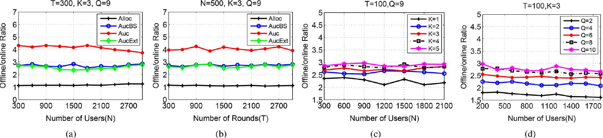
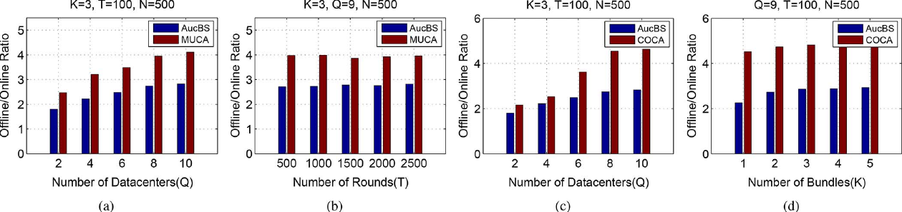

完整译文 · 原文逐段对照
英文在左，中文在右。每一栏按对应论文段落、公式、图表或算法配对；译者说明单独标识。
绿色：背景与直觉 蓝色：公式、算法与证明核对
论文全文 · 段落级中英文对照
面向云计算动态资源配置的在线拍卖框架
An Online Auction Framework for Dynamic Resource Provisioning in Cloud Computing
Abstract—Auction mechanisms have recently attracted substantial attention as an efficient approach to pricing and allocating resources in cloud computing. This work, to the authors’ knowledge, represents the first online combinatorial auction designed for the cloud computing paradigm, which is general and expressive enough to both: 1) optimize system efficiency across the temporal domain instead of at an isolated time point; and 2) model dynamic provisioning of heterogeneous virtual machine (VM) types in practice. The final result is an online auction framework that is truthful, computationally efficient, and guarantees a competitive ratio in social welfare in typical scenarios. The framework consists of three main steps: 1) a tailored primal-dual algorithm that decomposes the long-term optimization into a series of independent one-shot optimization problems, with a small additive loss in competitive ratio; 2) a randomized subframework that applies primal-dual optimization for translating a centralized cooperative social welfare approximation algorithm into an auction mechanism, retaining the competitive ratio while adding truthfulness; and 3) a primal-dual algorithm for approximating the one shot optimization with a ratio close to . We also propose two extensions: 1) a binary search algorithm that improves the average-case performance; 2) an improvement to the online auction framework when a minimum budget spending fraction is guaranteed, which produces a better competitive ratio. The efficacy of the online auction framework is validated through theoretical analysis and trace-driven simulation studies. We are also in the hope that the framework can be instructive in auction design for other related problems.
摘要：近年来，拍卖机制作为云计算资源定价与分配的有效方法，受到广泛关注。据作者所知，本文首次为云计算范式设计在线组合拍卖。该机制具有足够的通用性和表达能力，既能优化整个时间范围内的系统效率，而非只优化某一孤立时点；也能刻画实践中异构虚拟机（VM）的动态配置。本文提出的在线拍卖框架具有真实申报性和较高的计算效率，并在典型场景下保证社会福利竞争比接近 3.30。框架包含三个主要步骤：1）设计专用的原始-对偶算法，将长期优化分解为一系列彼此独立的单轮优化问题，竞争比仅承受较小的加性损失；2）设计随机化子框架，通过原始-对偶优化将集中式协作社会福利近似算法转化为拍卖机制，在加入真实申报性的同时保留竞争比；3）采用原始-对偶算法近似求解单轮优化问题，在实践场景中取得接近 ε 的近似比。本文还提出两项扩展：用二分搜索改善平均情形表现；在保证最低预算支出比例时改进在线拍卖框架，从而取得更好的竞争比。理论分析与基于真实工作负载轨迹的仿真验证了该框架的有效性。作者也希望这一框架能为相关问题的拍卖设计提供借鉴。
原 PDF p.1Index Terms—Cloud computing, combinatorial auction, resource allocation, pricing, online algorithms, truthful mechanisms.
TABLE I. AMAZON EC2 VM INSTANCES
| VM Type | CPU* | RAM | Disk | Virginia | Ireland | Tokyo |
|---|---|---|---|---|---|---|
| m1.medium | 2 | 3.75 GB | 410 GB | $0.120 | $0.130 | $0.175 |
| m1.large | 4 | 7.5 GB | 840 GB | $0.240 | $0.260 | $0.350 |
| m1.xlarge | 8 | 15 GB | 1.68 TB | $0.480 | $0.520 | $0.700 |
| c1.medium | 5 | 1.7 GB | 350 GB | $0.145 | $0.165 | $0.185 |
| c1.xlarge | 20 | 7 GB | 1.68 TB | $0.580 | $0.660 | $0.740 |
| m2.2xlarge | 13 | 34.2 GB | 850 GB | $0.820 | $0.920 | $1.101 |
* EC2 compute units
| VM 类型 | CPU* | 内存 | 磁盘 | 弗吉尼亚 | 爱尔兰 | 东京 |
|---|---|---|---|---|---|---|
| m1.medium | 2 | 3.75 GB | 410 GB | $0.120 | $0.130 | $0.175 |
| m1.large | 4 | 7.5 GB | 840 GB | $0.240 | $0.260 | $0.350 |
| m1.xlarge | 8 | 15 GB | 1.68 TB | $0.480 | $0.520 | $0.700 |
| c1.medium | 5 | 1.7 GB | 350 GB | $0.145 | $0.165 | $0.185 |
| c1.xlarge | 20 | 7 GB | 1.68 TB | $0.580 | $0.660 | $0.740 |
| m2.2xlarge | 13 | 34.2 GB | 850 GB | $0.820 | $0.920 | $1.101 |
I. INTRODUCTION
一、引言
puting paradigm that enables prompt and on-demand access to computing resources. As exemplified in Amazon EC2 [1] and Microsoft Azure [2], cloud providers invest substantially into their datacenter infrastructure, providing a virtually unlimited “sea” of CPU, RAM, and storage resources to cloud users, often assisted by virtualization technologies. The elastic and on-demand nature of cloud computing assists cloud users to meet their dynamic and fluctuating demands with minimal management overhead, while the cloud ecosystem as a whole achieves economies of scale through cost amortization.
云计算作为一种新兴计算范式，使用户能够迅速、按需访问计算资源。以 Amazon EC2 [1] 和 Microsoft Azure [2] 为例，云服务商大量投资数据中心基础设施，为云用户提供几乎取之不尽的 CPU、内存和存储资源，通常还借助虚拟化技术。云计算弹性、按需的特性帮助用户以较低的管理开销应对动态变化的需求；整个云生态则通过分摊成本实现规模经济。
Currently, most cloud providers adopt a fixed-price policy and charge users a fixed amount per-virtual-machine (VM) usage. For example, Table I shows the available VM types at Amazon EC2 and their hourly prices at different datacenters. Despite their apparent simplicity, fixed-price policies inher ently lack market agility and efficiency, failing to rapidly adapt to real-time demand–supply relation changes. Consequently, overpricing and underpricing routinely occur, which either dispel or undercharge the users, jeopardizing overall system social welfare as well as the providers’ revenue.
目前，多数云服务商采用固定价格策略，按虚拟机使用量向用户收取固定费用。例如，表 I 列出了 Amazon EC2 可用的 VM 类型及其在不同数据中心的小时价格。尽管固定价格策略看起来简单，但它缺乏市场灵活性与效率，无法及时适应实时供需变化。因此，价格过高或过低的情况时有发生，前者会令用户却步，后者会使服务商少收费用，二者都会损害系统整体社会福利和服务商收入。
Toward effectively discovering the market value of VMs, auction mechanisms have been at the focal point of recent literature on cloud resource allocation and pricing [3], [4]. Spot Instance [5] is a first-step attempt to apply the auction mechanism on Amazon EC2, which was enhanced by sub sequent work [4], [6]. A series of recent work further study auction mechanism design in cloud markets from different perspectives [7]–[9]. Unfortunately, all existing designs either consider one-round auctions only or model VMs as type-obliv ious commodities and fail to account for the providers’ ability to dynamically assemble VMs.
为了有效发现 VM 的市场价值，拍卖机制已成为云资源分配与定价研究的重点 [3]、[4]。Amazon EC2 的 Spot Instance [5] 是将拍卖机制用于云服务的初步尝试，后续研究对其作了改进 [4]、[6]。近期还有一系列工作从不同角度研究云市场中的拍卖机制设计 [7]–[9]。遗憾的是，已有设计要么只考虑单轮拍卖，要么把 VM 当作不区分类型的商品，未能体现服务商动态组装 VM 的能力。
Cloud Auctions Should Be Online: Real-world cloud resource transactions happen either when customer demands arrive or cloud resources become available, and hence are modeled more naturally by an online auction that incorporates the time dimen sion. Most cloud computing customers, enterprise or individual, are on a preallocated budget for a given time period (e.g., a year or a month like that in an ad-auction [10]). Thus, a customer’s purchase desire drastically declines over time, which needs to be considered for a practical auction mechanism. However, most existing cloud auctions focus on a single-round auction only and ignore such temporal correlation in decision making [8].
Manuscript received June 25, 2014; revised December 1, 2014, February 17, 2015, and May 12, 2015; accepted May 28, 2015; approved by the IEEE/ACM Transactions on Networking Editor U. Ayesta. Date of publication July 1, 2015; date of current version August 16, 2016. This work was supported in part by Hong Kong RGC grant HKU 718513 and NSERC Grant 10006298. DOI: 10.1109/TNET.2015.2444657.
Cloud Auctions Should Be Combinatorial: A cloud computing job in practice often demands a bundle of heterogeneous VM instances for its successful execution, and hence a cloud auction is naturally a combinatorial auction. For example, a social game application that consists of a front-end Web server layer, a load-balancing layer, and a back-end data storage layer is best served by a combination of VMs that are intended for communication-intensive, computation-intensive, and storage-intensive tasks, respectively. Such combinatorial VM auctions represent a dramatic departure of most existing VM auction designs that assume VMs are type-oblivious commodities, in that all VMs are essentially of the same type, and hence are substitutable or substitutable up to a simple multiplicative factor. Embracing heterogeneous VM types in the model further brings about the opportunity of considering dynamic resource provisioning: Decisions on VM assembling, which organizes the CPU, RAM, and Disk resource pools into typed VM instances, are no longer made randomly a priori [3], but made dynamically upon receiving user bids. Dynamic resource provisioning enables higher efficiency in cloud resource utilization, higher seller revenue for the provider, and higher social welfare for the entire cloud system.
This work generalizes and subsumes existing literature on cloud auctions by designing the first online combinatorial auction in which VMs of heterogeneous types are allocated in multiple consecutive time-slots. The final result is an online auction framework that simultaneously guarantees the following properties.
本文通过设计首个在线组合拍卖，推广并涵盖了现有云拍卖研究：该拍卖能在多个连续时隙中分配不同类型的 VM。最终的在线拍卖框架同时保证以下性质：
1) Truthfulness, the holy grail of auction mechanism design. It ensures that economically-motivated selfish buyers are automatically elicited to reveal their true valuations of the VMs they demand, in the bids submitted. This simplifies analysis of the resulting auction in theory and increases the predicability of auction outcomes in practice. 2) Combinatorial auctions, supporting heterogeneous VM types located at different datacenters. Besides hetero geneity in their types, another dimension of VM diversity may arise due to their geographical locations (assuming multiple datacenters). A combinatorial auction is hence necessary. 3) Dynamic resource provisioning. The number of instances of each VM type is not predefined, but dynamically ad justed as part of the auction mechanism, tailored to real time user demand. 4) Online auction: In commercial cloud platforms, auctions are executed repeatedly and the prices change termly. Each user is subject to a practical budget limitation for a given time period. Our online auction models a long-time auction over multiple rounds that are coupled together by customer budgets. A competitive ratio of is guaran teed in typical scenarios, i.e., our online auction achieves a long-term social welfare that is at least a 1/3.30 fraction of the offline optimum. Our proposed online auction framework consists of three main modules: A) translating online optimization into a series of one-round optimization problems; B) translating an approx imation algorithm for one-round optimization into a truthful auction; and C) designing an effective approximation algorithm
Our proposed online auction framework consists of three main modules: A) translating online optimization into a series of one-round optimization problems; B) translating an approx imation algorithm for one-round optimization into a truthful auction; and C) designing an effective approximation algorithm
本文的在线拍卖框架由三个主要模块组成：A）将在线优化转化为一系列单轮优化问题；B）将单轮优化的近似算法转化为真实拍卖；C）设计有效的近似算法。
First, we formulate a linear integer program that characterizes the long-term social welfare optimization problem in the cloud market for VMs and formulate the dual LP of its LP relaxation (without the integer constraints). A tailored primal-dual algorithm iteratively adjusts a dual variable corresponding to each customer’s budget, acting as a shadow price that signals how “tight” the latter is. A series of one-round combinatorial VM auctions are then executed under a fixed shadow price vector. Such primal-dual decoupling of the auction rounds admits a rather intuitive interpretation: The algorithm strikes to avoid prematurely depleting a user’s budget, and gives higher priority to cloud customers with low budget pressures during each auction round. As a result, we prove that the decomposition intro duces an additive loss to the competitive ratio bounded by .
首先，我们建立线性整数规划，刻画云市场中 VM 的长期社会福利优化问题，并对其线性松弛的对偶问题进行建模。专门设计的原始-对偶算法迭代调整每位客户预算对应的对偶变量，把它作为反映预算紧张程度的影子价格；随后，在固定的影子价格向量下依次执行单轮组合 VM 拍卖。这种将各轮拍卖通过原始-对偶方法解耦的做法直观上可理解为：避免过早耗尽用户预算，并在每轮中优先考虑预算压力较小的客户。我们证明，这种分解导致的竞争比加性损失有上界。
Second, for each one-round combinatorial auction problem, we employ a randomized auction subframework, which ex ploits the underlying packing property of one-round social welfare maximization and translates any centralized cooper ative approximation algorithm into an auction, inheriting the same approximation ratio while adding truthfulness. At the core of this translation is a primal-dual optimization-based decomposition technique that decomposes an optimal fractional solution to one-round social welfare maximization into a convex combination of integral solutions, recently developed in the literature of theoretical computer science [11] and suc cessfully applied in the literature of computer networking [12]. We also propose a new binary search-based technique to find the minimum feasible scale-down ratio in the fractional so lution decomposition and thereby improve the average-case performance of the online auction algorithm.
其次，对于每个单轮组合拍卖问题，我们利用单轮社会福利最大化问题的底层装箱结构，设计随机化拍卖子框架。它能把任意集中式协作近似算法转化为拍卖，在加入真实申报性的同时保留相同的近似比。该转换的核心是一种基于原始-对偶优化的分解技术：把单轮社会福利最大化的最优分数解分解为整数解的凸组合。这种方法近期由理论计算机科学研究提出 [11]，并已成功用于计算机网络领域 [12]。我们还提出新的二分搜索技术，以找到分数解分解所需的最小缩减比例，进而改善在线拍卖算法的平均表现。
Third, we design a specific approximation algorithm for one round VM allocation by applying iterative primal-dual solution updates followed by dual fitting. The resulting algorithm is poly nomial-time computable and guarantees an approximation ratio that approaches in practical scenarios. Combining all three modules together, the overall competitive ratio of the resulting online auction framework is bounded by in typ ical scenarios. We hope that the online auction framework pro posed in this work, as well as its three components, may shed light to the design of auction mechanisms in related problem settings.
第三，我们通过迭代更新原始-对偶解并进行对偶拟合，为单轮 VM 分配设计专用近似算法。该算法可在多项式时间内计算，并在实践场景中取得接近 ε 的近似比。结合上述三个模块，整体在线拍卖框架在典型场景中的竞争比上界为 3.30 左右。我们希望本文提出的框架及其三个组成部分能为相关问题中的拍卖机制设计提供启发。
What’s more, we further propose an improvement to the online auction framework in the case that a minimum budget spending fraction is guaranteed. The improved online auction algorithm uses a new method to adjust the dual variables corresponding to users’ budgets over time and achieves a better competitive ratio.
此外，当能够保证最低预算支出比例时，我们进一步改进了在线拍卖框架。改进算法采用新方法随时间调整用户预算的对偶变量，从而得到更好的竞争比。
The rest of the paper is organized as follows: We discuss related work in Section II, define the problem model in Section III, present the online algorithm framework and the auction algorithm in Sections IV and V, discuss an improvement of the online auction framework in Section VI, present simulations in Section VII, and conclude the paper in Section VIII.
本文其余部分安排如下：第二节讨论相关工作；第三节定义问题模型；第四、第五节介绍在线算法框架与拍卖算法；第六节讨论在线框架的改进；第七节给出仿真；第八节总结全文。
II. RELATED WORK
二、相关工作
Auctions have been extensively studied for resource alloca tion in computing and network systems, which simultaneously target bidding truthfulness and economic efficiency. Classic apareas, such as network bandwidth allocation [13], wireless spec trum allocation [12], and wireless crowdsourcing [14].
计算系统和网络系统中的资源分配已广泛采用拍卖机制，其目标是同时实现报价真实和经济效率。经典应用包括网络带宽分配 [13]、无线频谱分配 [12] 和无线众包 [14]。
The celebrated VCG mechanism [15] is a well-known type of auction. It is essentially the only type of auction that simul taneously guarantees both truthfulness and absolute economic efficiency (social welfare maximization), through calculating the optimal allocation and a carefully designed pricing rule. However, when the underlying allocation problem is NP-hard, which is common for combinatorial auctions [16], VCG be comes computationally infeasible. When polynomial-time ap proximation algorithms are applied to solving the underlying allocation problem, VCG loses its truthfulness property [17]. One usually needs to custom design a payment rule to work in concert with the approximation algorithm at hand to achieve truthfulness; for example, this can be done by exploiting the concept of critical bids [18]. Another relatively new alternative is to resort to the LP decomposition technique [11], as done in this work, which is universally applicable to problems with a packing or covering structure.
著名的 VCG 机制 [15] 是一种广为人知的拍卖类型。它通过计算最优分配并设计谨慎的定价规则，能够同时保证真实申报性和绝对经济效率（社会福利最大化），本质上是唯一具备这两种保证的拍卖类型。然而，当底层分配问题是 NP 难问题（组合拍卖中很常见 [16]）时，VCG 在计算上不可行。若使用多项式时间近似算法求解底层分配问题，VCG 又会失去真实申报性 [17]。通常需要专门设计支付规则，使其与所用近似算法配合来保证真实申报，例如利用临界报价概念 [18]。另一种较新的选择是采用线性规划分解技术 [11]，如本文所做；这种方法普遍适用于具有装箱或覆盖结构的问题。
Recently, a series of auction mechanisms are designed for VM allocation in cloud computing. Wang et al. [6] apply the critical value method, and derive a mechanism that is collusion resistant, an important property in practice. Yet their work, like many others, considers only one-round auctions; and their algorithm has a competitive ratio , where is the number of VM instances. Mashayekhy et al. [19] propose an online mech anism for resource allocation in clouds, also based on the crit ical value method, but omit a theoretical performance analysis. Shanmuganathan et al. [20] introduce the concept of bundles in VM allocation. Zhang et al. [8] are among the first to study dynamic VM provisioning and design a truthful single-round auction using the LP decomposition method. However, our work is more advanced than theirs in two aspects: 1) We consider the problem over a period of time, instead of just one round, and serve cloud users in an online manner. Our mechanism more closely resembles a real-world cloud market in practice. 2) We not only apply but also propose improvements to the decom posing method, which can improve the performance of the online auction in practice.
近期已有一系列针对云计算 VM 分配的拍卖机制。Wang 等人 [6] 使用临界值方法，设计了具有抗合谋性质的机制，这在实践中很重要。但与许多其他工作一样，该研究只考虑单轮拍卖；其算法的竞争比还与 VM 实例数量有关。Mashayekhy 等人 [19] 提出基于临界值方法的云资源在线分配机制，但没有给出理论性能分析。Shanmuganathan 等人 [20] 将“捆绑”概念引入 VM 分配。Zhang 等人 [8] 较早研究了 VM 动态配置，并用线性规划分解方法设计真实的单轮拍卖。本文在两方面进一步推进了该研究：1）考察一段时间内的问题，以在线方式服务云用户，而不只研究单轮，从而更贴近真实云市场；2）不仅采用分解方法，还提出改进，以提升在线拍卖在实践中的表现。
Extending single-round truthful auctions into online auctions in a straightforward way usually breaks the truthfulness prop erty [21]. The lack of future information brings a key challenge in pursuing truthfulness. For example, the VCG auction does not directly work in the online setting since the optimal allocation for the future cannot be calculated, even given unlimited computational resources. A known technique for achieving truth fulness in online auctions is based on the concept of a supply curve [22], as applied by Zhang et al. [4] in their design of an online cloud auction algorithm. The bidding language and the user characteristic proposed in their work are novel and cap ture the heterogeneous demands in cloud market. However, they only consider a single type of VM, significantly simplifying the underlying social welfare maximization. In absence of multiple VM types, their model naturally ignores the dynamic provisioning problem. Wang et al. propose an online auction for cloud markets [9], and their model also focuses on one type of VM only.
直接把单轮真实拍卖扩展为在线拍卖，通常会破坏真实申报性 [21]。缺乏未来信息是保证在线真实申报的一大挑战。例如，即使计算资源无限，VCG 也无法直接用于在线场景，因为无法计算未来的最优分配。一种已知的在线真实拍卖技术是供应曲线 [22]；Zhang 等人 [4] 将其用于在线云拍卖算法。他们提出的报价语言和用户特征很新颖，能够刻画云市场中的异构需求。不过，该研究只考虑一种 VM 类型，大大简化了底层社会福利最大化问题；由于没有多种 VM 类型，其模型自然也忽略动态配置。Wang 等人 [9] 的云市场在线拍卖同样只针对一种 VM 类型。
Many resource allocation algorithms have been pro posed in cloud computing scenarios with different focuses. VMs in a distributed cloud system. Maguluri et al. [24] tackle the randomness of arriving workloads and solve optimization problems for load balancing and VM scheduling. Xu et al. [25] summarize the recent attempts in managing performance over head in clouds. Lin et al. [26], [27] study the energy efficiency in VM provisioning. VM migration overhead [28] and energy consumption [29] are also important practical issues in VM provisioning. In addition, data traffic commonly exists between VMs. Guo et al. [30] focus on traffic variation issues in the underlying datacenter networks and solve the VM placement problem with traffic awareness. These aspects are not fully covered in the current paper, and will be investigated in our future work.
云计算场景中还提出了许多关注不同问题的资源分配算法。Alicherry 和 Lakshman [23] 研究分布式云系统中的网络感知资源分配。Maguluri 等人 [24] 针对到达工作负载的随机性，优化负载均衡和 VM 调度。Xu 等人 [25] 总结了云环境性能开销管理的近期进展。Lin 等人 [26]、[27] 研究 VM 配置中的能源效率；VM 迁移开销 [28] 和能耗 [29] 也是 VM 配置中的重要实践问题。此外，VM 之间通常存在数据流量。Guo 等人 [30] 关注底层数据中心网络中的流量变化，并求解流量感知的 VM 放置问题。这些方面尚未纳入本文，将在未来工作中研究。
III. PROBLEM MODEL
三、问题模型
A. Cloud System
A. 云系统
We consider a cloud spanning geographically distributed datacenters, each with a pool of types of resources including CPU, RAM, and disk storage that can be dynamically assem bled into different types of VMs for lease to cloud users. Let denote the integer set . Each VM of type is constituted by units of type resource, for all There are users of the cloud system, which request VMs of different types to execute their jobs. The cloud provider acts as the auctioneer and leases VMs to the users through auctions.
本文研究由多个地理位置分散的数据中心组成的云系统。每个数据中心都维护 CPU、内存、磁盘等资源池，服务商可以根据需求把这些底层资源动态组装成不同类型的虚拟机（VM），再出租给用户。记用户、时隙、VM 类型、资源类型、数据中心和可选资源束的索引集合分别为 \([N]\)、\([T]\)、\([M]\)、\([R]\)、\([Q]\) 和 \([K]\)，其中 \([X]=\{1,2,\ldots,X\}\)。组装一台第 \(m\) 类 VM 需要 \(\alpha_{m,r}\) 单位的第 \(r\) 类资源。服务商作为拍卖方，根据用户报价决定每轮的资源分配。
The system runs in a time-slotted fashion within a span of , where is a potentially large number. We sup pose the available amounts of resources at each datacenter are time-varying, i.e., there are units of type resource in datacenter at time , whose value may change from one time-slot to another.1 In each time-slot, one round of the auctions is carried out, where the cloud provider decides the VM allocation for the current time-slot based on user bids. The terms time-slot and round are used interchangeably.
系统运行期划分为 \(T\) 个时隙，每个时隙举行一轮拍卖。时隙 \(t\) 中，数据中心 \(q\) 可用的第 \(r\) 类资源量记为 \(A_{q,r}^{(t)}\)，该容量可以随时间变化。每轮拍卖只使用当时的可用容量，服务商在收到本轮报价后即时决定分配；文中“时隙”和“轮次”指同一时间单位。
The cloud users are bidders in the auctions, each sub mitting a bid containing optional bundles in each round. A bundle consists of a list of desired quantities of VMs of dif ferent types, as well as the bidder’s valuation for the bundle. Specifically, let denote the number of type- VMs in datacenter that user specifies in its th bundle in time-slot , and be its valuation for this th bundle in . The th bundle in the bid of user in the auction at is described by a -tuple of elements , and . The cases where a user may join and leave (intermittent bidding) or may bid a smaller number of bundles than are all subsumed by our bid model by allowing empty bundles in the bids.
每位用户每轮可以提交至多 \(K\) 个互斥的资源束作为备选方案。用户 \(n\) 的第 \(k\) 个资源束，说明其在每个数据中心分别需要多少台各类型 VM；用户对该完整资源束的估值记为 \(b_{n,k}^{(t)}\)。其中，\(d_{n,k,m,q}^{(t)}\) 表示该资源束在数据中心 \(q\) 需要的第 \(m\) 类 VM 数量。由于资源束可能包含多种 VM，消耗的第 \(r\) 类资源总量由各 VM 类型的资源需求加总得到：
In each round, upon receiving users’ bids, the cloud provider computes its resource allocation and produces the auction results, , where if user wins bundle and 0 otherwise, as well as its payment for acquiring VMs in its winning bundle. We assume that a user can win at most one bundle among its optional bundles in each round of the auctions (given that any need for combining two or more bun dles can be expressed as a separate bundle already). In addition, the VM demands in each bundle cannot be supplied partially, i.e., the cloud provider either provides all the required VMs in a bundle to the bidder or rejects the bundle.
服务商为每个用户、资源束及时隙设置分配指示量：取 1 表示完整资源束获配，取 0 表示未获配。每位用户每轮至多得到一个备选资源束，且资源束不可拆分；需要多种 VM 共同运行的应用，应把完整组合写成同一个资源束。
Let denote the utility function of user in time-slot , which is decided by its valuations of the bundles and its payment at . We will present the concrete form of the utility function in Section V. We assume user has a total budget , which is a bound of its overall payment in the auctions throughout the system span under consideration, e.g., a preallocated budget for VM rental over a month or a year, which is assumed to be public information. A user’s valuations in its bids are independent from its current budget level, while its current budget level will be taken into consideration at the cloud provider when al locating resources.
资源需求由 VM 数量换算而来；式中先按 VM 类型计算所需资源，再对一份资源束内的 VM 数量求和。
TABLE II. NOTATION
| Notation | Meaning |
|---|---|
| $N$ | # of users |
| $T$ | # of time slots |
| $M$ | # of VM types |
| $R$ | # of resource types |
| $Q$ | # of datacenters |
| $K$ | # of optional bundles in each bid |
| $[X]$ | integer set $\{1,2,\ldots,X\}$ |
| $\alpha_{m,r}$ | amount of resource $r$ in a type-$m$ VM |
| $A_{q,r}^{(t)}$ | available resource $r$ at datacenter $q$ at time $t$ |
| $b_{n,k}^{(t)}$ | user $n$'s valuation for its $k$-th bundle at $t$ |
| $d_{n,k,m,q}^{(t)}$ | # of type-$m$ VM at datacenter $q$ in user $n$'s $k$-th bundle at $t$ |
| $c_{n,k,r,q}^{(t)}$ | amount of resource $r$ at datacenter $q$ in user $n$'s $k$-th bundle at $t$ |
| $B_n$ | user $n$'s total budget |
| $y_{n,k}^{(t)}$ | whether user $n$ wins its $k$-th bundle at time $t$ |
| $y_{n,k}^{(t)F}$ | optimal fractional solution |
| $y_{n,k}^{(t)\ell}$ | an integer solution to (3) |
| $\Pi_n^{(t)}$ | user $n$'s payment at time $t$ |
| $\Pi_n^{(t)F}$ | user $n$'s payment at time $t$ under fractional VCG |
| $\Pi_n^{(t)\ell}$ | user $n$'s payment at time $t$ under allocation $y^{(t)\ell}$ |
| $\beta_\ell$ | probability of choosing integer solution $y^{(t)\ell}$ |
| $u_n^{(t)}$ | user $n$'s utility at time $t$ |
| $\nu$ | competitive ratio of $\mathcal A_{\mathrm{round}}$ |
| $\lambda$ | approximation ratio of Algorithm 2 |
| $w_{n,k}^{(t)}$ | reduced valuation of user $n$'s $k$-th bundle at time $t$ |
| $B_{\max}$ | maximum ratio: a single-bundle bid / a user's budget |
| $\gamma$ | $ (1+B_{\max})^{1/B_{\max}} $ |
| $g_n$ | user $n$'s minimum budget spending fraction |
| $g$ | $\min_{n\in[N]} g_n$ |
| $C_{q,r}^{(t)}, C_{\min}^{(t)}, \varepsilon^{(t)}$ | maximum amount of type-$r$ resource at datacenter $q$ required by any bundle in round $t$; minimum ratio of available resources to maximum per-bundle demand; maximum ratio of resource demands between any two bundles in a user's bid, respectively. |
| 记号 | 含义 |
|---|---|
| \(N,T,M,R,Q,K\) | 分别表示用户数、时隙数、虚拟机类型数、资源类型数、数据中心数，以及每位用户每轮可提交的资源束数。 |
| \([X]\) | 整数集合 \(\{1,2,\ldots,X\}\)。 |
| \(\alpha_{m,r}\) | 组装一台第 \(m\) 类虚拟机所需的第 \(r\) 类资源量。 |
| \(A_{q,r}^{(t)}\) | 时隙 \(t\) 数据中心 \(q\) 可用的第 \(r\) 类资源量。 |
| \(d_{n,k,m,q}^{(t)}\) | 用户 \(n\) 在时隙 \(t\) 提交的第 \(k\) 个资源束中，位于数据中心 \(q\) 的第 \(m\) 类虚拟机数量。 |
| \(b_{n,k}^{(t)}\) | 用户 \(n\) 对时隙 \(t\) 第 \(k\) 个资源束的估值。 |
| \(c_{n,k,r,q}^{(t)}\) | 用户 \(n\) 的第 \(k\) 个资源束在数据中心 \(q\) 消耗的第 \(r\) 类资源量。 |
| \(B_n\) | 用户 \(n\) 在整个拍卖周期内的总预算。 |
| \(y_{n,k}^{(t)}\) | 分配指示量；取 1 表示用户 \(n\) 在时隙 \(t\) 获得第 \(k\) 个资源束，否则取 0。 |
| \(y_{n,k}^{(t)F},\ y_{n,k}^{(t)\ell}\) | 分别表示线性松弛得到的分数分配，以及分解中第 \(\ell\) 个可行整数分配。 |
| \(x_n^{(t)}\) | 用户 \(n\) 的预算紧张度；值越大，表示可供后续轮次使用的预算越少。 |
| \(w_{n,k}^{(t)}\) | 结合预算紧张度折减后的资源束估值，用于计算本轮分配权重。 |
| \(\Pi_n^{(t)},\ u_n^{(t)}\) | 分别表示用户 \(n\) 在时隙 \(t\) 的支付和效用。 |
| \(s_n^{(t)},\ z_{q,r}^{(t)}\) | 分别是用户至多获得一个资源束的约束、以及数据中心资源容量约束对应的对偶变量，可解释为相应约束的影子价格。 |
| \(\beta_\ell\) | 随机选择第 \(\ell\) 个整数分配的概率。 |
| \(v_{n,k}^{(t)},\tau,\mathcal L\) | 分别表示分解问题对偶变量、非负辅助变量，以及候选整数分配的索引集合。 |
| \(\nu,\lambda\) | 分别表示单轮拍卖的竞争比，以及单轮分配算法的近似比。 |
| \(B_{\max}\) | 任一单个资源束估值与相应用户总预算之比的最大值。 |
| \(\gamma\) | 在线框架的预算更新参数，定义为 \((1+B_{\max})^{1/B_{\max}}\)。 |
| \(g_n,\ g\) | 分别表示用户 \(n\) 的最低预算支出比例，以及所有用户中最低的支出比例。 |
| \(C_{q,r}^{(t)},\ C_{\min}^{(t)},\ \varepsilon^{(t)}\) | 分别表示单个资源束对该数据中心、该资源的最大需求量；可用资源量与最大单束需求量之比的最小值；以及同一用户不同资源束在同一资源上的最大需求比例。 |
B. Online Auction Problem
B. 在线拍卖问题
We aim to design an online auction mechanism to be carried out by the cloud provider, which guides resource allocation in the cloud system in a round-by-round fashion through multiple consecutive rounds. The auction design targets the following properties.
本文旨在设计由云服务商执行的在线拍卖机制，通过连续多轮拍卖逐轮指导云系统中的资源分配。机制要满足以下目标：
1) Truthfulness (Definition 1): Bidding true valuations is a dominant strategy at the users, and consequently, both bid ding strategies and auction design are simplified. 2) Individual rationality: Each bidder obtains a nonnegative utility by participating in the auction in any time-slot, i.e., . 3) Social welfare maximization: The social welfare in our system is the sum of the cloud provider’s revenue, , and all the users’ utility gain, , which equals truthful bidding), . Users’ payment and the provider’s revenue cancel out each other.
Definition 1 (Truthfulness): The auction mechanism is truthful if for any user at any time , declaring a bid that truthfully reveals its requirements of VM quantities, , and its valuations of bundles , al ways maximizes its expected utility, regardless of other users’ bids.
We first formulate an offline social welfare optimization problem that provides the “ideal” optimal allocation strate gies for the cloud provider to address users’ VM demands in the entire system lifespan , assuming bids are truthful. Let be the amount of type resource at datacenter required in user ’s th bundle maximize (1) s.t. Constraint (1a) specifies that each user can win at most one bundle each round. Constraint (1b) is the budget constraint at each user. Constraint (1c) limits the overall demand for each type of resource in the winning bundles by the amount available.
先建立一个离线基准问题：假设服务商预先知道整个运行期内所有用户的真实估值、每轮资源供给和资源需求，再求使全期社会福利最大的可行分配。这里的福利是所有获配资源束估值之和。每个资源束必须完整接受或拒绝；用户的全期支出不能超过预算；每轮、每个数据中心中各类资源的总消耗也不能超过可用量。下式把这三类限制和不可分割的分配条件同时写出：
Introducing dual variable vectors , and to constraints (1a), (1b), and (1c) respectively, and ignoring the binary variable constraint (1d) temporarily, we can formulate the dual of the resulting linear program to be used in the primal-dual algorithm design in Section IV (2) s.t. (2a) (2b)
把“每位用户每轮至多获配一个资源束”“用户全期预算”和“各数据中心的资源容量”分别放松后，可为三类约束配置对偶价格。暂时把不可分割的 0-1 分配变量放宽为非负实数，就得到下式的线性规划对偶。预算影子价格衡量继续给某位用户分配资源的机会成本，资源影子价格则反映某类资源的稀缺程度；在线算法据此逐轮协调分配。
To derive an optimal solution to (1), complete knowledge about the system over its entire lifespan is needed, which is apparently not practical. In a dynamic cloud system, the provider should allocate resources on the fly, based on the cur rent amount of available resources, ’s, and users’ bidding bundles including resource demands ’s and valuations ’s, which are not known a priori. We seek to design an online auction mechanism for real-time resource allocation, which also guarantees truthful bidding. We achieve the goals in two steps. First, in Section IV, we assume that a truthful auction mechanism to be carried out in each time-slot is known and guarantees an approximation ratio , and we propose an online algorithm framework that produces a competitive ratio
离线最优解依赖未来信息，不能直接用于实时决策。实际服务商只知道当前可用容量和本轮报价，必须当场分配资源，同时避免用户因策略性虚报而获利。本文分两步处理：先把长期问题拆为逐轮决策，并证明若每轮机制的近似保证已知，则整体在线机制仍具有有界竞争比；再构造满足真实性和个体理性的随机化单轮拍卖，为这一在线框架提供可执行的分配子程序。
IV. ONLINE ALGORITHM FRAMEWORK
四、在线算法框架
We design an online algorithm framework as shown in Algorithm 1, which solves the offline optimization problem (1) and its dual (2), using a subroutine running at each time-slot. We next discuss the one-round resource allocation problem to be solved by , as well as the design rationale of the online algorithm framework.
我们设计了算法 1 所示的在线算法框架，通过在每个时隙运行子程序，求解离线优化问题（1）及其对偶问题（2）。下面先说明子程序需要求解的单轮资源分配问题，再解释在线框架的设计思路。
Algorithm 1. The Online Algorithm Framework $\mathcal A_{\mathrm{online}}$
$x_n^{(0)}\leftarrow 0,\quad\forall n\in[N]$
for all $1\le t\le T$ do
$w_{n,k}^{(t)}=\begin{cases}0,&\text{if }x_n^{(t-1)}\ge1,\\ b_{n,k}^{(t)}(1-x_n^{(t-1)}),&\text{otherwise,}\end{cases}\quad\forall n,k.$
Run $\mathcal A_{\mathrm{round}}$. Let $\mathcal N$ be the set of winning users, and $k_n$ be the index of their corresponding winning bundle, for $n\in\mathcal N$. Define $b_{n,k_n}^{(t)}=0$ for $n\notin\mathcal N$.
$x_n^{(t)}\leftarrow x_n^{(t-1)}\left(1+\frac{b_{n,k_n}^{(t)}}{B_n}\right)+\frac{b_{n,k_n}^{(t)}}{B_n(\gamma-1)},\quad\forall n\in[N].$
end for算法 1 在线拍卖框架 \(\mathcal A_{\mathrm{online}}\)
- 将每位用户的预算紧张度初始化为 \(x_n^{(0)}=0\)。
- 在时隙 \(t\)，若预算紧张度已达 1，则该用户本轮不再参与；否则，用剩余预算折减资源束估值，权重为 \(w_{n,k}^{(t)}=b_{n,k}^{(t)}(1-x_n^{(t-1)})\)。
- 调用单轮拍卖，确定实际分配。把未获分配用户的中标估值记为 0，再按下式更新所有用户的预算紧张度：\[x_n^{(t)}=x_n^{(t-1)}\left(1+\frac{b_{n,k_n}^{(t)}}{B_n}\right)+\frac{b_{n,k_n}^{(t)}}{B_n(\gamma-1)}.\]
其中，\(k_n\) 为用户本轮获分配的资源束索引；若未获分配，则将对应估值置零。
原 PDF p.5A. One-Round Resource Allocation
A. 单轮资源分配
Assuming truthful bids are known, the one-round social wel fare maximization problem at time is as follows, which in cludes the constraints from the offline optimization problem (1) related to the current time-slot, and excludes the user budget constraints (dealt with in the online algorithm framework in stead). , a reduced valuation of user for bundle from the actual valuation adjusted according to the level of its remaining budget, is used in the objective function. The ratio nale will be detailed in Section IV-B. Given , the cloud provider’s current resource supplies ’s, and users’ resource demands ’s, the one-round optimization problem decides the optimal resource allocation at
现在把视角限定在当前时隙 \(t\)。服务商此时知道每位用户对各资源束的真实估值、本轮各数据中心的资源容量，以及每个资源束会消耗多少资源。跨轮次的总预算约束暂不写入这个单轮问题，因为它由在线框架逐轮跟踪；但本轮给用户的权重会根据此前的预算使用情况折减。具体而言，\(x_n^{(t-1)}\) 表示用户 \(n\) 在本轮开始前的预算紧张度，\(1-x_n^{(t-1)}\) 可理解为其预算尚未耗尽的程度。因此，分配时使用的边际价值是实际估值乘以剩余预算比例。给定这些折减估值，单轮问题在满足资源容量的前提下，选择使总折减估值最大的完整资源束：
maximize (3) s.t. (3a) (3b) (3c) Adopting the same dual variables as in the dual of (1) and omitting constraint (3c), we formulate the dual of LP (3) minimize (4) s.t. (4b)
上式同时表达了三项实际规则：每位用户本轮至多得到一个备选资源束；每个数据中心对每类资源的消耗不超过当轮容量；分配变量必须为 0 或 1，因此不允许把一份资源束拆成小数部分分给用户。为分析单轮算法，先暂时放宽最后一项，将分配变量视为非负实数。由“用户至多一份”和“资源容量”两类约束分别引入对偶价格，可得下方的对偶问题：用户价格 \(s_n^{(t)}\) 覆盖其每个备选资源束的折减价值，资源价格 \(z_{q,r}^{(t)}\) 则为消耗资源付出影子成本。原问题和对偶问题一起，构成后续原始—对偶近似算法的分析基础。
The primal problem (3) is a special case of the multidimen sional multiple-choice 0–1 knapsack problem [31], which is both NP-hard and, more strongly, has no fully polynomial-time approximation schemes unless [32]. What we will pursue in is an auction mechanism, which not only guar antees individual rationality and truthfulness, but also employs a primal-dual approximation algorithm that solves problems (3) and (4) to decide resource allocation in polynomial time with a small approximation ratio. We delay the discussion of the auction mechanism to Section V, but first utilize its properties when analyzing our online algorithm framework. We will show that given a competitive ratio achieved by the one-round auction mechanism, our online algorithm framework achieves a good competitive ratio.
整数单轮问题是多维、多选 0-1 背包问题的特例，属于 NP 难问题；除非 \(P=NP\)，不存在完全多项式时间近似方案 [31], [32]。因此，目标不是精确求得每轮最优整数分配，而是在多项式时间内求得有理论保证的近似分配，并配套设计支付规则，使拍卖仍满足真实性和个体理性。第五节给出这样的随机化拍卖；本节则先证明，只要该单轮机制的原始解和对偶解具有给定的近似关系，逐轮运行的长期框架仍能保持良好的整体竞争比。
B. Online Algorithm
B. 在线算法
When a good approximation algorithm for one-round resource allocation is in place, the difficulty of designing an online algorithm lies in achieving a good competitive ratio, defined as the maximum ratio between the offline optimal social welfare derived by solving (1) exactly and the social welfare produced by the online algorithm. The budget limits the bundles a user can acquire over the rounds of auctions, leading to different amounts of overall social welfare when the budget is spent in different rounds. The intuition we follow in designing the online algorithm is that inefficiency in social welfare may appear when a user’s budget runs out at an early stage since its future bids become invalid after its budget depletion, narrowing down possible future allocation decisions at the provider, prohibiting larger social welfare. The ideal scenario is that each user’s budget can last for all the rounds of auctions, making it possible for the cloud provider to explore the best resource allocation strategies over the entire span to approach the best overall social welfare.
有了单轮近似分配器之后，在线设计仍需处理跨轮次的预算协调。本文将竞争比定义为离线最优社会福利与在线机制实际获得的社会福利之比；比值越小，在线机制越接近事先知道全部未来信息的基准方案。用户预算限定了其可赢得资源束的总价值，因此同一预算若在不同轮次花费，可能产生不同的全期福利。
Under this intuition, we should be cautious when winning a bundle suddenly exhausts a user’s remaining budget. Our main idea in the online algorithm in Algorithm 1 is to associate the resource allocation in each round with the users’ remaining budgets. We introduce an auxiliary variable for each user
设计思路是：若某用户的预算过早耗尽，此后该用户的报价失效，服务商未来可选择的分配方案便减少，可能导致社会福利较低。理想情况下，每位用户的预算都能持续整个拍卖期间，使服务商有机会在全程中探索更好的分配方案。因此，当某个获胜资源束可能一下耗尽用户的剩余预算时，算法应格外谨慎。
, whose value starts at 0, increases with the decrease of the remaining budget of the user, and reaches 1 when the budget is exhausted. Instead of the actual valuation of each bundle, is used in the one-round resource allocation as in (3), such that the bid from a user with a smaller remaining budget will be evaluated less at the cloud provider, leading to a lower chance of ac quiring a bundle. A user’s budget lasts for a longer period of time as a result. is updated after each round of resource allocation in Algorithm 1, where . , which is the maximum ratio between the valuation of any bundle and the corresponding user’s budget. We consider , given that users typically do not put a large proportion of their total budget on one bundle in one round. The increment of is carefully computed (see proof of Theorem 1), such that the budget constraint (1b) is guaranteed over the rounds of online auctions. We set dual variable in the offline dual problem variable after rounds . In this way, the adjustment of in each round can be understood as the adjustment of the dual variable toward an optimal solution to the offline dual problem (2).
算法 1 的核心做法是将每轮资源分配与用户剩余预算关联起来。为每位用户引入辅助变量，初值为 0；用户剩余预算越少，该变量越大；预算耗尽时变量达到 1。单轮分配不用资源束的实际估值，而采用经该辅助变量折减后的估值，因此剩余预算较少用户的报价权重较低，赢得资源束的机会也较小，用户预算便可延续更久。每轮分配后按照算法 1 的规则更新该变量。这里使用的参数是任一用户的任一资源束估值与该用户预算之比的最大值。实践中用户通常不会把总预算的很大部分押在单轮的单个资源束上。增量经过仔细设计（见定理 1 的证明），从而保证在线拍卖过程中始终满足预算约束。离线对偶问题（2）中与预算约束对应的对偶变量，设为该辅助变量在各轮更新后的取值。
The performance of our online algorithm in Algorithm 1 is stated in Theorem 1, with a detailed proof in Appendix A.
这样一来，每轮辅助变量的更新可理解为：逐步把对应的对偶变量调整到离线对偶问题（2）的最优解方向。定理 1 给出算法 1 的性能，详细证明见附录 A。
Theorem 1: If an auction mechanism in each round produces feasible solutions for (3) and (4) and guarantees the stated one-round competitive ratio, then the online algorithm framework is competitive for optimization problem (1).
We note that when , the competitive ratio ap proaches , i.e., the long-term online optimization framework incurs only an additive loss of in competitive ratio, as compared to the one-round allocation algorithm.
在定理所述的渐近条件下，在线优化框架的竞争比趋近于单轮分配算法的竞争比；长期优化带来的竞争比损失只是一个加性项。
V. RANDOMIZED AUCTION MECHANISM
五、随机化拍卖机制
We now present a randomized auction mechanism that efficiently allocates resources according to users’ bids in each time-slot and guarantees individual rationality and truthfulness. The auction mechanism in each round allocates resources according to the one-round resource allocation problem in (3) and decides the payments from the winning bidders. The classic Vickrey–Clarke–Groves (VCG) mecha nism [15] is a potential candidate for our auction design, which assigns items (VM bundles in our case) to bidders in a socially optimal manner by solving a corresponding resource allocation problem, charges each winner the externality it exerts on other bidders, and ensures that the optimal strategy for a bidder is to bid its true valuations. However, our allocation problem in (3) is NP-hard, and hence a VCG mechanism becomes computa tionally infeasible. We therefore resort to a fractional version of the VCG auction for achieving both computational efficiency (polynomial-time complexity) and economic efficiency [social welfare maximization in (3)], by applying the VCG mechanism to the LP relaxation of the integer program (3). The fractional VCG mechanism produces fractional bundle allocation results, which are not practically applicable. We further employ a primal-dual optimization-based decomposition technique that decomposes such an optimal fractional solution into a convex combination of integral solutions, and then design a random ized auction that randomly picks one from the integral solutions as the bundle allocation result in each round and retains the nice properties of a fractional VCG auction. We detail the fractional VCG auction, the decomposition technique, and the randomized auction design in Sections V-A–V-C.
现在介绍随机化拍卖机制。它在每个时隙依据用户报价高效分配资源，并保证个体理性和真实申报性。每轮机制依照单轮资源分配问题（3）决定分配和获胜者支付。经典 Vickrey–Clarke–Groves（VCG）机制 [15] 是一种候选方案：它通过求解资源分配问题，以社会福利最优方式把物品（本文中是 VM 资源束）分给竞标者，并向获胜者收取其对其他竞标者造成的外部性费用，从而确保如实申报估值是最优策略。然而，问题（3）是 NP 难问题，VCG 在计算上不可行。
The classic Vickrey–Clarke–Groves (VCG) mecha nism [15] is a potential candidate for our auction design, which assigns items (VM bundles in our case) to bidders in a socially optimal manner by solving a corresponding resource allocation problem, charges each winner the externality it exerts on other bidders, and ensures that the optimal strategy for a bidder is to bid its true valuations. However, our allocation problem in (3) is NP-hard, and hence a VCG mechanism becomes computa tionally infeasible. We therefore resort to a fractional version of the VCG auction for achieving both computational efficiency (polynomial-time complexity) and economic efficiency [social welfare maximization in (3)], by applying the VCG mechanism to the LP relaxation of the integer program (3). The fractional VCG mechanism produces fractional bundle allocation results, which are not practically applicable. We further employ a primal-dual optimization-based decomposition technique that decomposes such an optimal fractional solution into a convex combination of integral solutions, and then design a random ized auction that randomly picks one from the integral solutions as the bundle allocation result in each round and retains the nice properties of a fractional VCG auction. We detail the fractional VCG auction, the decomposition technique, and the randomized auction design in Sections V-A–V-C.
因此，我们使用分数形式的 VCG 拍卖：把 VCG 应用于整数规划（3）的线性规划松弛，以同时获得多项式时间计算效率和经济效率（即式（3）的社会福利最大化）。分数 VCG 会产生分数资源束分配，无法直接用于实际云系统。为此，我们再通过基于原始-对偶优化的分解技术，把最优分数解拆成整数解的凸组合；然后随机选取其中一个整数解作为本轮分配结果，同时保留分数 VCG 的良好性质。下面依次介绍分数 VCG 拍卖、分解方法和随机化拍卖设计。
A. Fractional VCG Auction
A. 分数 VCG 拍卖
In the fractional VCG auction, the auctioneer solves the LP relaxation of (3) by relaxing constraint (3c) to , to decide the bundle allocation in . Let denote the resulting optimal VCG payment from a winner, the auctioneer solves the LP relaxation again with the winner excluded from the allocation. Let denote the social welfare achieved when winner is excluded. The payment of winner , is: .
分数 VCG 拍卖将式（3c）放松为分数约束，求解式（3）的线性规划松弛以决定资源束分配。若某获胜者要计算 VCG 支付，拍卖者会将其从分配中排除后重新求解线性规划；排除该获胜者时所能取得的社会福利，与全体竞标者的福利差额决定该获胜者的 VCG 支付。
The utility function of bidder in a VCG auction is typ ically defined as the difference between its valuation and its payment. In our online auction framework, a user’s utility in each round should be related not only to its valuation and pay ment, but also to its remaining budget: Intuitively, smaller utility gain is appreciated if a user won a bundle when its remaining budget is small, and larger otherwise. We characterize this prop erty using a utility function (5) This utility function is consistent with the social welfare calcu lation in the one-round allocation problem (3). Thus, a user’s budget can potentially last longer, enabling later acquirement of better bundles with the same consumption of budget (i.e., the same payment), contributing to social welfare efficiency over all rounds of auctions.
VCG 拍卖中，竞标者的效用通常定义为估值减去支付。在本文的在线框架里，每轮用户效用还应取决于剩余预算：直观而言，剩余预算较少时赢得资源束所带来的效用增益应较低，预算较充足时则较高。式（5）给出相应的效用函数。它与单轮分配问题（3）的社会福利计算相一致，有助于延长预算使用时间，使用户以后仍有机会以相同支付获得更合适的资源束，从而提高多轮拍卖的整体社会福利效率。
We show in Theorem 2 that under this utility function, bid ding true valuations is the best strategy for each user in the fractional VCG auction. A nonnegative utility is guaranteed for each bidder, based on VCG auction theory [15].
定理 2 证明，在此效用函数下，如实申报估值是分数 VCG 拍卖中用户的最优策略。根据 VCG 拍卖理论 [15]，每位竞标者也都能获得非负效用。
Theorem 2: The fractional VCG auction that produces fractional allocation and payments is truthful and individually rational.
B. Decomposing the Fractional Solution
B. 分数解的分解
Since fractional VM bundles are impractical in real-world cloud systems, we next decompose the fractional solution into a combination of integer solutions, which will be used by our randomized auction mechanism. We apply the LP duality-based decomposition technique [11]. The goal of the decomposition is to find and a set of integer solutions ( is an index set), to the one-round resource allocation problem (3), such that , and . The randomized auction in each round can choose the integer solution with probability , achieving a good competitive ratio in social welfare in expectation, as compared to that achieved by the optimal integer solution to (3). However, there in fact does not exist a convex combination of integer solutions, , that equals the fraction solution , because otherwise the expected social welfare achieved by these integer solutions equals that achieved by the fractional solution, which apparently contradicts with the fact that the fractional solution achieves a higher social welfare than any integer solution. Therefore, to achieve a feasible decomposition, we need to scale down the optimal fractional solution by a certain factor. According to [11], if there exists an approximation algorithm that solves the one-round allocation problem (3) with an approximation ratio of and guarantees (where and are the objective function values of the
现实云系统无法使用分数 VM 资源束，因此需要把分数解分解为整数解的组合，供随机化机制选取。本文采用基于线性规划对偶性的分解技术 [11]。目标是为单轮资源分配问题（3）找到一组整数解及对应概率，使各整数解按这些概率加权后得到缩减后的分数解。每轮随机化拍卖以相应概率选择一个整数解，因此其期望社会福利可与式（3）的最优整数解比较。
the scaling factor, and rest assured that a feasible solution to the following decomposition problem exists: minimize (6) s.t. (6a) (6b) (6c)
由于分数解的社会福利高于任何整数可行解，一般不存在整数解的凸组合能直接等于原始最优分数解。为保证可以分解，需先按一定比例缩减该分数解。根据文献 [11]，如果存在一个近似算法，能以给定近似比求解单轮资源分配问题并满足相应条件，则缩减后的分数解一定存在可行分解；式（6）给出这个分解问题。
We give a simple numerical example to illustrate the decom position. Suppose there are two users and two types of VMs. The fractional solution is (0.3, 0.7, 1, 0.7), representing that the first (second) user receives 0.3 (1) unit of VM 1 and 0.7 (0.7) unit of VM 2, respectively. It can be decomposed into two in teger solutions: (1, 0, 1, 0) and (0, 1, 1, 1), with corresponding probabilities 0.3 and 0.7. However, in fact we cannot find any combination of integer solutions satisfying the one-round constraints in (3) (i.e., the integer solutions are not feasible) since the optimal fractional solution should be better than any feasible integer solution. Therefore, we have to divide the fractional so lution by a factor before decomposing it.
举例说明：假设有两位用户和两类 VM，分数分配为 (0.3, 0.7, 1, 0.7)，表示第一位用户分别获得 0.3 个 VM 1 和 0.7 个 VM 2，第二位用户分别获得 1 个 VM 1 和 0.7 个 VM 2。它可写成两个整数向量 (1, 0, 1, 0) 和 (0, 1, 1, 1) 的组合，权重分别为 0.3 和 0.7。但这些整数解并不满足单轮问题（3）的约束；否则组合将实现与分数解相同的期望社会福利，这与分数解优于任一整数解矛盾。因此，必须先按某个因子缩小分数解再进行分解。
We next present a primal-dual algorithm that solves (3) with an approximation ratio , and then discuss how to solve the decomposition problem (6) to obtain and .
下面先给出求解式（3）、近似比为相应参数的原始-对偶算法，再说明如何求解分解问题（6），从而得到缩减因子及相应权重。
1) Primal-Dual Algorithm for One-Round Resource Allocation
1）单轮资源分配的原始-对偶算法
1) Primal-Dual Algorithm for One-Round Resource Alloca tion: Algorithm 2 is our primal-dual approximation algorithm to the NP-hard allocation problem (3). is the maximum amount of type resource at datacenter re quired by any bundle in . is the minimum ratio between the total amount of available resource of a type and the amount of the resource required by one bundle. In practice, the resource pool is substantially larger than a single user’s demand, and hence . The main idea of the algorithm is to introduce an auxiliary variable for each type of resource [which is the dual variable associated with constraint (3b)], acting as the unit price in allocation decision. The unit price is updated according to the remaining amount of this type of resource. The algorithm evaluates each bundle acand always chooses the user with a higher bid on a lower valued bundle as the winner.
算法 2 是求解上述 NP 难单轮分配问题的原始—对偶近似算法。它先为每类资源设置一个影子价格，再为每位用户选取折减估值最高的备选资源束。随后，算法比较各用户资源束的“折减估值／影子价格计量的资源成本”，优先分配比值最高的一束。分配后，消耗量较大或剩余容量较少的资源，其影子价格会按乘法规则上升；因此后续选择会逐渐避开稀缺资源。算法一直运行到用户都已处理，或价格总量达到停止阈值。该过程得到可行的整数分配和相应对偶价格。特别地，算法选择的是单位影子成本带来的估值较高的资源束，并非单看原始报价。
Algorithm 2. A Primal-Dual Algorithm to Solve One-round Allocation Problem (3)
$\mathcal N\leftarrow\emptyset,\quad z_{\mathrm{base}}\leftarrow QR\cdot\exp(C_{\min}^{(t)}-1)$
$y_{n,k}^{(t)}\leftarrow0,\quad s_n^{(t)}\leftarrow0,\quad z_{q,r}^{(t)}\leftarrow1/A_{q,r}^{(t)},\quad\forall n,k,r,q$
while $\sum_{r\in[R]}\sum_{q\in[Q]}A_{q,r}^{(t)}z_{q,r}^{(t)}算法 2 单轮资源分配算法 \(\mathcal A_{\mathrm{round}}\)：原始—对偶近似算法
- 将已分配用户集合初始化为 \(\mathcal N\leftarrow\varnothing\)，并设所有分配变量和用户对偶变量为 0：\(y_{n,k}^{(t)}\leftarrow0,\ s_n^{(t)}\leftarrow0\)；资源影子价格初始化为可用量的倒数：\(z_{q,r}^{(t)}\leftarrow1/A_{q,r}^{(t)}\)。停止阈值为 \(z_{\mathrm{base}}=QR\exp(C_{\min}^{(t)}-1)\)。
- 对每位尚未处理的用户，先选其预算折减估值最高的资源束：\(k(n)=\arg\max_{k\in[K]}w_{n,k}^{(t)}\)。再选择“折减估值／影子价格计量的资源成本”最大的用户及资源束：\[n^*=\arg\max_{n\notin\mathcal N}\frac{w_{n,k(n)}^{(t)}}{\sum_{q\in[Q],r\in[R]}c_{n,k(n),r,q}^{(t)}z_{q,r}^{(t)}}.\]
- 将该资源束分给所选用户，令 \(y_{n^*,k(n^*)}^{(t)}\leftarrow1\)、\(s_{n^*}^{(t)}\leftarrow w_{n^*,k(n^*)}^{(t)}\)，并把该用户加入 \(\mathcal N\)。随后，对每个数据中心和资源种类，按资源消耗量相对于剩余容量的比例乘法提高影子价格：\[z_{q,r}^{(t)}\leftarrow z_{q,r}^{(t)}z_{\mathrm{base}}^{\,c_{n^*,k(n^*),r,q}^{(t)}/(A_{q,r}^{(t)}-C_{q,r}^{(t)})}.\]
- 重复以上步骤，直至所有用户均已处理，或影子价格加权总量达到停止阈值。输出整数分配及相应对偶变量。
这里，\(C_{q,r}^{(t)}\) 是任一资源束对该数据中心、该资源种类的最大需求量。算法以乘法方式抬高稀缺资源的影子价格，因而后续选择会自然避开已趋紧的资源。
原 PDF p.7Theorem 3: Algorithm 2 computes feasible primal and dual solutions for (3) and (4) and guarantees the approximation bound stated in the theorem.
2) Decomposition With LP Duality-Based Technique
2）基于线性规划对偶性的分解
2) Decomposition With LP Duality-Based Technique: To solve the decomposition problem (6), we can first find all the possible integer solutions to (3) using some exhaustive search method, and then directly solve (6) to derive the decomposition coefficients ’s. However, this method has an exponential-time complexity since there are an exponential number of possible integer solutions , and hence an ex ponential number of variables in LP (6). We therefore resort to its dual, formulated in (7), where dual variables and associate with primal constraints (6a) and (6b), respectively maximize (7) s.t. (7a) (7b) Even though the dual (7) has an exponential number of constraints, the ellipsoid method can be applied to solve it in poly nomial time. The ellipsoid method obtains an optimal dual so lution using a polynomial number of separating hyperplanes. Algorithm 2 acts as a key component of a separation oracle for generating these separating hyperplanes, and a feasible integer solution to (3) can be derived each time a separating hyperplane is generated [11]. Hence, a polynomial number of candidate in teger solutions ’s are produced through the process of the ellipsoid method, and the primal problem (6) can be reduced to a linear program with a polynomial number of variables ( ’s) corresponding to these integer solutions. Then, we can solve the reduced primal problem in polynomial time. The correctness of the above decomposition method is given in Lemma 1, with detailed proof and the construction of the separation oracle in Appendix D. Lemma 1: The decomposition method correctly obtains a polynomial number of integer solutions to the one round allocation problem (3) and the probabilities , which solve (6), in polynomial time. C. Randomized Auction Algorithm 3 gives our randomized auction to be carried out in each round of the online algorithm in Algorithm 1. It selects an integer solution produced by the decomposition method with probability . The payment from a winning bidder sat isfies two conditions: 1) The expectation of the payment should be equal to the scale-down fractional payment,
一种直接方法是穷举问题（3）所有整数解，再求解式（6）得到分解系数；但整数解数量呈指数增长，线性规划变量数也呈指数级。本文转而求解其对偶问题（7）。虽然该对偶问题含指数数量的约束，但可用椭球法在多项式时间内求解。椭球法通过多项式数量的分离超平面得到最优对偶解；算法 2 作为分离预言机的核心，每次都能生成一个可行整数解。因此，椭球法过程中只会产生多项式数量的候选整数解；随后，原始问题（6）可缩减成具有多项式数量变量的线性规划并在多项式时间内求解。引理 1 给出正确性，详细证明及分离预言机构造见附录 D。
Lemma 1: The decomposition method correctly obtains a polynomial number of integer solutions to the one-round allocation problem (3) and the probabilities, which solve (6), in polynomial time.
C. Randomized Auction
C. 随机化拍卖
C. Randomized Auction. Algorithm 3 gives our randomized auction to be carried out in each round of the online algorithm in Algorithm 1. It selects an integer solution produced by the decomposition method with probability. The payment from a winning bidder satisfies two conditions: the expectation of the payment equals the scale-down fractional payment to preserve truthfulness, and the payment is no larger than the bidder’s valuation of the winning bundle to guarantee individual rationality.
算法 3 给出了在算法 1 每轮中执行的随机化拍卖。它以分解方法求出的概率选取一个整数解。获胜者的支付满足两个条件：1）期望支付等于缩减后的分数支付；2）支付不超过获胜者对其资源束的估值，从而保证个体理性。定理 4（证明见附录 E）指出，算法 3 可在多项式时间内运行，并且具有真实申报性、个体理性及所述竞争比。
Algorithm 3. One-Round Randomized Auction $\mathcal A_{\mathrm{round}}$ in $t$
1. Solve the LP relaxation of (3), with $w_{n,k}^{(t)}=\max\{0,(1-x_n^{(t-1)})b_{n,k}^{(t)}\}$. Denote the fractional solution by $y_{n,k}^{(t)F},\;\forall n,k$.
2. Calculate the fractional payment $\Pi_n^{(t)F}$ by the VCG payment rule.
3. Solve the pair of primal-dual decomposition LPs in (6) and (7) using the ellipsoid method, using Algorithm 2 as a separation oracle, and derive a polynomial number of integer solutions to (3), $y^{(t)\ell},\;\forall\ell\in L$, and the corresponding decomposition coefficients $\beta_\ell$.
4. Choose $y^{(t)\ell}$ with probability $\beta_\ell,\;\forall\ell\in L$.
5. $\forall n\in[N],\quad\Pi_n^{(t)\ell}=\Pi_n^{(t)F}\cdot\frac{\sum_{k\in[K]}w_{n,k}^{(t)}y_{n,k}^{(t)\ell}}{\sum_{k\in[K]}w_{n,k}^{(t)}y_{n,k}^{(t)F}}.$算法 3 时隙 \(t\) 的单轮随机化拍卖 \(\mathcal A_{\mathrm{round}}\)
- 求解问题（3）的线性松弛，使用 \(w_{n,k}^{(t)}=\max\{0,(1-x_n^{(t-1)})b_{n,k}^{(t)}\}\)，记分数解为 \(y_{n,k}^{(t)F}\)。
- 按 VCG 支付规则计算分数支付 \(\Pi_n^{(t)F}\)。
- 用椭球法求解分解原问题（6）及其对偶问题（7）；以算法 2 作为分离预言机，得到多项式数量的可行整数解 \(y^{(t)\ell}\) 和概率系数 \(\beta_\ell\)。
- 按概率 \(\beta_\ell\) 选择一个整数解，作为实际资源分配。
- 对每位用户按其整数解价值与分数解价值的比例缩放支付：\[\Pi_n^{(t)\ell}=\Pi_n^{(t)F}\frac{\sum_{k\in[K]}w_{n,k}^{(t)}y_{n,k}^{(t)\ell}}{\sum_{k\in[K]}w_{n,k}^{(t)}y_{n,k}^{(t)F}}.\]
In the fractional VCG auction, the auctioneer solves the LP relaxation of (3) by relaxing constraint (3c) to , to decide the bundle allocation in . Let denote the resulting optimal VCG payment from a winner, the auctioneer solves the LP relaxation again with the winner excluded from the allocation. Let denote the social welfare achieved when winner is excluded. The payment of winner , is:
直觉：线性松弛负责计算“平均意义上的好分配”，分解与抽样负责把它转换成每轮可实际执行的方案。
Theorems 4–5: The one-round randomized auction runs in polynomial time, is truthful and individually rational, and is λ(1+B_max)-competitive. Combined with Algorithm 1, it yields a truthful, individually rational online auction with the competitive ratio stated in Theorem 5.
定理 5。将单轮随机化拍卖嵌入在线框架后，所得在线拍卖满足真实性和个体理性，且竞争比为 \((1+B_{\max})\left(\lambda(1+B_{\max})+\frac{1}{\gamma-1}\right)\)。原 PDF p.8
D. Improving the Scale-Down Factor
D. 改进缩减因子
We have decomposed the fractional solution in Section V-B after scaling it down by the approximation ratio of the one-round allocation Algorithm 2, such that a feasible solution to the decomposition problem (6) is guaranteed. According to Theorem 5, the scale-down factor is closely related to the competitive ratio of our online auction, such that a smaller scale-down factor leads to a better competitive ratio. However, a scale-down factor smaller than may not guarantee a feasible decomposition. We therefore design a binary search algorithm in Algorithm 4 to compute the smallest scale-down factor that enables feasible decomposition.
第五节将分数解按算法 2 的近似比缩小后再分解，以保证分解问题（6）可行。定理 5 表明，缩减因子与在线拍卖竞争比密切相关，因子越小，竞争比越好。不过，比算法 2 的近似比更小的因子未必能保证存在可行分解。因此，算法 4 用二分搜索计算能够使分解可行的最小缩减因子。
The algorithm is designed based on a property of the scale down factor, as given in Theorem 6 (proof in Appendix G). With its monotonicity, we can find the smallest, feasible scale down factor using binary search (with arbitrary small error). We should note that this trial-and-error method may improve the performance of our online auction algorithm on average in
算法利用定理 6 的单调性：如果某个缩减因子下能够分解，那么任何更大的缩减因子也能分解。因此可以通过二分搜索（允许任意小误差）找出最小可行因子。该试探方法可能在平均情况下提升在线拍卖性能；最坏情形下则仍按定理 5 的保证分析。本文将在基于真实轨迹的仿真中评估这一改进。
Algorithm 4. Binary Searching Smallest Scale-Down Factor
Require: allowable error $\delta$. Decide the scale-down ratio $\lambda$ in Algorithm 3 with the following steps: $\lambda_l\leftarrow1,\quad\lambda_r\leftarrow\lambda$. while $\lambda_r-\lambda_l>\delta$ do $\lambda_m\leftarrow(\lambda_l+\lambda_r)/2$ Solve (7) with scale-down factor $\lambda_m$. If decomposing succeeds then $\lambda_r\leftarrow\lambda_m$; else $\lambda_l\leftarrow\lambda_m$. end while Solve (7) with scale-down factor $\lambda_r$.
算法 4 二分搜索最小缩减因子
输入：允许误差 \(\delta\)。
初始化 \(\lambda_l\leftarrow1,\ \lambda_r\leftarrow\lambda\)。
- 当 \(\lambda_r-\lambda_l>\delta\) 时，取中点 \(\lambda_m\leftarrow(\lambda_l+\lambda_r)/2\)。
- 用缩减因子 \(\lambda_m\) 求解问题（7），检查分解是否成功。
- 若分解成功，令 \(\lambda_r\leftarrow\lambda_m\)；否则令 \(\lambda_l\leftarrow\lambda_m\)。
- 循环结束后，用 \(\lambda_r\) 求解问题（7），输出最终分解。
Theorem 6: If the fractional allocation can be decom posed under scale-down factor , then it can also be decom posed under any factor .
Theorem 6: If the fractional allocation can be decomposed under scale-down factor λ₁, it can also be decomposed under any factor λ₂>λ₁.
VI. IMPROVEMENT OF THE ONLINE ALGORITHM FRAMEWORK WITH MINIMUM BUDGET SPENDING
六、在线框架的改进：最低预算支出
In this section, we propose an improvement of the online algorithm framework when additional information on users’ budget spending is available [10]. Suppose that each user’s total spending over rounds is at least a fraction of its budget. Specifically, user is going to use at least an amount of its overall budget, where . When this minimum budget spending guarantee is in place, we design an improved online algorithm framework , as given in Algorithm 5. We show that this improved online algorithm can achieve a better worst-case competitive ratio , where is the minimum budget spending fraction among all users, as compared to the competitive ratio of the original online auction given in Theorem 5. For example, in the case that , the additive loss in the competitive ratio brought by , as compared to the one-round auction , is ; if we know that all users are going to spend at least % of their respective budget, the additive loss brought by the
如果还能获得用户全期预算支出的最低保证，就可以进一步改善在线框架。设用户 \(n\) 至少支出预算的 \(g_n\) 比例，且该保证在机制执行前已知。改进算法在预算紧张度达到阈值前采用线性更新，达到阈值后恢复基础算法的更新方式；阈值及精确更新见算法 5。令所有用户最低支出比例中的最小值为 \(g=\min_n g_n\)，则定理 7 给出改进后的竞争比。其加性项从基础框架的 \(1/(\gamma-1)\) 降为 \((1-g)/(\gamma^{1-g}-(1-g))\)。当 \(B_{\max}\to0\) 且 \(g=0.9\) 时，原文给出的该项约为 0.099；基础框架对应项约为 0.582。
Algorithm 5. The Improved Online Algorithm Framework based on Minimum Budget Spending Guarantee $\mathcal{A}^{\prime}_{\mathrm{online}}$
$x_n^{(0)}\leftarrow0,\quad x_n^s\leftarrow\frac{g_n}{\gamma^{1-g_n}-(1-g_n)},\quad\forall n\in[N]$
for all $1\le t\le T$ do
$w_{n,k}^{(t)}=\begin{cases}0,&\text{if }x_n^{(t-1)}\ge1,\\ b_{n,k}^{(t)}(1-\max\{x_n^{(t-1)},x_n^s\}),&\text{otherwise,}\end{cases}\quad\forall n,k.$
Run $\mathcal A_{\mathrm{round}}$. Let $\mathcal N$ be the set of winning users, and $k_n$ be the index of their corresponding winning bundle, for $n\in\mathcal N$. Define $b_{n,k_n}^{(t)}=0$ for all $n\notin\mathcal N$.
$x_n^{(t)}\leftarrow x_n^{(t-1)}+\left(\max\{x_n^{(t-1)},x_n^s\}+\frac{x_n^s(1-g_n)}{g_n}\right)\frac{b_{n,k_n}^{(t)}}{B_n},\quad\forall n\in[N].$
end for算法 5 具有最低预算支出保证的在线框架
已知用户 \(n\) 至少支出预算比例 \(g_n\) 时，先设定阈值 \(x_n^s=\dfrac{g_n}{\gamma^{1-g_n}-(1-g_n)}\)。若预算紧张度达到 1，则本轮权重设为 0；否则，按折减后的价值参与分配：\(w_{n,k}^{(t)}=b_{n,k}^{(t)}(1-\max\{x_n^{(t-1)},x_n^s\})\)。令未获分配用户的中标估值为 0，再更新预算紧张度：\[x_n^{(t)}=x_n^{(t-1)}+\left(\max\{x_n^{(t-1)},x_n^s\}+\frac{x_n^s(1-g_n)}{g_n}\right)\frac{b_{n,k_n}^{(t)}}{B_n}.\]其中，\(k_n\) 为用户本轮获分配的资源束索引。
原 PDF p.8The main idea of improving to is as follows. If user spends a large fraction of its overall budget over time, the value of will be close to 1 upon termination of the online algorithm. In the original online algorithm in Algorithm 1, the value of is exponentially increased from 0 to 1 with the in crease of budget consumption since we can prove that no matter what the final value of is, updating exponentially guaran tees a good performance of the online algorithm. Now we know that will at least reach a value (computed according to the minimum budget expenditure based on the update formula of in Algorithm 1), and we can increase the value of linearly with the increase of budget consumption before it reaches , and then increase in the original way (as in Algorithm 1) afterwards. In this way, we can prove that a better competitive ratio can be achieved.
改进框架的核心思路如下：若用户在整个运行期间支出了相当大比例的预算，那么在线算法结束时，对应辅助变量会接近 1。原算法 1 以指数方式随预算消耗增加该变量；无论其最终值如何，这一更新方式都能保证良好性能。现在既然知道该变量至少会达到由最低预算支出比例和原更新式计算出的某个值，就可以在达到该值之前，先随预算消耗线性增加该变量，之后再恢复算法 1 的指数更新。由此可证明得到更好的竞争比。
Theorem 7: The improved online framework in Algorithm 5 combined with Algorithm 3 constitutes a truthful, individually rational, competitive online auction.
定理 7 给出算法 5 与算法 3 组合后的性质：该在线拍卖具有真实申报性、个体理性和定理所述竞争比。完整证明见附录 H。
VII. PERFORMANCE EVALUATION
七、性能评估
We evaluate our online auction design using trace-driven simulations. We investigate 23 types of VMs distributed in (default value 9) datacenters, assembled from three types of resources (CPU, RAM, and Disk capacity, ). Users’ resource demands are extracted from Google cluster-usage data [33], which record jobs submitted to the Google cluster with information on their resource demands (CPU, RAM, Disk). We translate each job request in the Google data into a bidding bundle as follows: We generate a set of VMs in
我们通过基于轨迹的仿真评估在线拍卖设计。实验包含 23 种 VM，分布于多个数据中心（默认 9 个），由三类资源构成：CPU、内存和磁盘容量。用户资源需求取自 Google 集群使用数据 [33]，其中记录了提交给 Google 集群的作业及其 CPU、内存、磁盘需求。
(default value 9) datacenters, assembled from three types of resources (CPU, RAM, and Disk capacity, ). Users’ resource demands are extracted from Google cluster-usage data [33], which record jobs submitted to the Google cluster with information on their resource demands (CPU, RAM, Disk). We translate each job request in the Google data into a bidding bundle as follows: We generate a set of VMs in Table I randomly that altogether can make up the resource demands in the job request; the valuation in the bidding bundle is calculated as the product of the total cost to acquire these VMs according to the VM charges in Table I and a random coefficient in the range of [0.5, 2]. In this way, we obtain a pool of bidding bundles from the Google data. In each round of the online auctions, each user randomly picks (default 3) bundles in the pool, tags each VM in each bundle with a data center randomly selected from the datacenters, and bids the bundles. A user ’s total budget is decided by multiplying the sum of valuations in all the bundles the user may bid in the
我们将 Google 数据中的每个作业请求转换为报价资源束：从表 I 的 VM 类型中随机生成一组实例，使其资源总量能够满足该作业需求；该资源束估值设为按表 I 价格计算的 VM 总费用，再乘以区间 [0.5, 2] 内的随机系数。由此形成报价束池。每轮拍卖时，每位用户从中随机挑选若干资源束（默认 3 个），并为每个资源束中的 VM 随机指定一个数据中心，再提交报价。
rounds of auctions by a random coefficient in the range of [0.5, 1]. We also compute the total amount of resource of each type needed by all the bid bundles of users in each round, scale it down using a random factor in [0, 1], and distribute the overall amount of type resource to datacenters evenly, to obtain the amount of available resource, , for each type of resource in each datacenter at each time. Note that we run random bundle selection for each user over rounds first to estimate users’ budgets ’s and available resources in the datacenters, ’s, before running the experiments to evaluate our online auction with the obtained ’s and ’s. We suppose the maximum ratio between the overall demands for any type of resource in any two bundles in a user’s bid in each time-slot , i.e., , is no larger than 2.5, by picking up bundles with similar resource demands for each user in the auctions, which we believe to reflect the reality better. We also suppose
用户总预算按其多轮可能报价的估值总和乘以区间 [0.5, 1] 内的随机系数确定。我们还计算每轮所有报价束对各类资源的总需求，乘以 [0, 1] 内的随机缩放因子，再把各类资源总量平均分配到数据中心，得到每个时隙各数据中心可用的资源量。运行评估实验之前，先对用户的报价束选择过程进行随机模拟，以估计预算和各数据中心的可用资源。实验将同一用户同一时隙不同资源束之间的最大资源需求比例限制在 2.5 以内：通过为每位用户选取资源需求相近的资源束来实现，作者认为这更符合实际情况。
A. Performance of Our Online Algorithms
A. 在线算法的性能
We compare the performance of four algorithms:
我们比较四种算法：
• Alloc, a pure online resource allocation algorithm, with the one-round resource allocation algorithm Algorithm 2 serving in the place of in in Algorithm 1; • Auc, our online auction algorithm presented in Section V-C, i.e., combined with in Algorithm 3; • AucBS, the online auction algorithm with the improved scale-down factor, i.e., adding the binary search in Algorithm 4 to the auction algorithm in ; • AucExt, the improved online auction algorithm with the improved scale-down factor, i.e., adding the binary search in Algorithm 4 to in the improved online auction algorithm in Algorithm 5.
We compare these algorithms in different settings, based on the ratio between the offline optimal social welfare derived by solving (1) exactly and the overall social welfare produced by each online algorithm over rounds, which we refer to as the offline/online ratio. In each scenario, we repeat each experiment for 10 times to derive the average ratios. We first compare the algorithms through varying the number of cloud users from 300 to 3000, while fixing the number of rounds , as illustrated in Fig. 1(a). The offline/online ratio of Auc declines when is large , which is consistent with our theoretical analysis in Theorem 3: The larger the scale of the cloud system, the larger the value of , and consequently the better offline/online ratio results. When users’ truthful resource demands and valuations are as sumed available for free, the pure online resource allocation al gorithm, Alloc, achieves an offline/online ratio close to 1, which shows that our online algorithm framework together with the one-round resource allocation algorithm performs closely to the offline optimum in social welfare, if all the cloud users are coop erative. AucBS achieves a better offline/online ratio as compared to Auc, revealing the usefulness of our improved scale-down factor based on the binary-search Algorithm 4 in decomposing the fractional solution into better integer solutions in practical scenarios. AucExt only slightly outperforms AucBs in this av erage-case ratio since its improvement mainly lies in the theo retical worst-case competitive ratio.
在不同实验设置下，我们计算离线最优社会福利（精确求解式（1）所得）与在线算法运行多轮后累计社会福利之比，称为“离线/在线比”。每种场景重复 10 次并取平均值。首先，将云用户数从 300 增至 3000，同时固定拍卖轮数，如图 1(a) 所示。用户数较大时，Auc 的离线/在线比下降。这与定理 3 的分析一致：云系统规模越大，相应参数越大，离线/在线比表现越好。若假定免费获得用户真实需求和估值，纯在线分配算法 Alloc 的离线/在线比接近 1，说明在线框架与单轮算法在所有云用户都合作的情况下，所得社会福利接近离线最优。AucBS 优于 Auc，说明二分搜索算法 4 在实践中有助于把分数解分解成更好的整数解。AucExt 的平均情形表现仅略优于 AucBS，因为其主要改进体现在理论最坏情形竞争比上。

Figure 1. Performance of Alloc, Auc, AucBS, and AucExt (a) under different numbers of users, (b) under different numbers of rounds, (c) with different numbers of bundles, and (d) with different numbers of datacenters.

We next vary the total number of rounds our system is running for while fixing the number of users to 500. Suppose each round is 1 h. We observe in Fig. 1(b) that the offline/online ratio of each algorithm always remains at similar levels, demonstrating the stable performance of our online algorithms regardless of the total number of rounds they are applied into.
接着固定用户数为 500，改变系统运行的总轮数，并假定每轮为 1 小时。图 1(b) 显示，各算法的离线/在线比始终处于相近水平，说明无论在线算法执行多少轮，其性能都较为稳定。
We further evaluate the performance of AucBS when the number of bundles each user bids for in each round, , and the number of datacenters, , vary. Fig. 1(c) shows that in general the performance of the improved online auction is better when the number of bundles is smaller. This can be explained as follows: The competitive ratio of our online auction (given in Theorem 5) is related to , the approximation ratio of the one-round resource allocation algorithm in Algorithm 2, which is further closely related to . When is smaller, is potentially smaller, and thus is smaller, leading to a lower competitive ratio of the online auction. In a practical cloud system, the bundles that a user bids are typically different time-slot, e.g., different bundles may specify different numbers of different types of VMs requested from different datacenters, which add up to a similar amount of each type of resource across different bundles, to serve the user’s need in . Therefore, we do not expect a large value of at any time. When the value of is capped (e.g., to 2.5 in our simulation settings), the competitive ratio is bounded even when takes larger values, as shown by the similar offline/online ratios obtained when , or 5, respectively, in Fig. 1(c).
随后考察 AucBS 在每位用户每轮的报价束数量以及数据中心数量变化时的表现。图 1(c) 总体显示，报价束数量较少时，改进后的在线拍卖表现更好。这是因为在线拍卖的竞争比与算法 2 的单轮近似比相关，而后者又与相应参数相关；报价束较少时该参数可能更小，从而改善在线拍卖的竞争比。现实云系统中，用户提交的不同报价束往往在各数据中心请求不同类型、不同数量的 VM，但各资源束的资源总需求相近。因此，我们预计任一时隙中该参数不会很大。当其上限固定（例如仿真中的 2.5）时，即使数据中心数目增大，竞争比也有界；图 1(c) 中不同数量设置所得离线/在线比相近，体现了这一点。
Fig. 1(d) shows that when the total number of datacenters in the cloud system increases, the performance of our online auction degrades slightly because the approximation ratio of Algorithm 2 is larger when is larger. Nevertheless, we do not expect more than a few tens of datacenters in a real-world cloud system, and the offline/online ratio is still acceptable around 2.80 when is 10.
图 1(d) 显示，云系统的数据中心总数增加时，在线拍卖性能略有下降，因为算法 2 在参数较大时的近似比也会增大。不过，现实云系统中的数据中心通常不会多达数十个；当数据中心数为 10 时，离线/在线比仍约为 2.80，可以接受。
We note that the performance ratios obtained in our simu lations are much smaller than the theoretical ratios computed based on Theorem 5, in the range of 6–7 under the same settings as used in our simulations. This promises the good performance of our online auction algorithm in practice.
仿真得到的性能比远小于在相同设置下根据定理 5 计算的理论比值（约为 6–7），表明在线拍卖算法在实践中表现良好。
B. Comparison to Existing Auction Mechanisms
B. 与现有拍卖机制比较
Now we compare our online auction algorithm AucBS to an other auction algorithm MUCA [6]. The settings in MUCA are the most similar in the existing literature, which however is a one-round multi-unit combinatorial auction, where each user only demands one resource bundle . The main idea of MUCA is to calculate a virtual price for each bundle based on the amount of resource consumed by a bundle and a randomly assigned unit resource price, and to choose the winning bundle as the one with the highest cost efficiency, i.e., the highest val uation with the lowest virtual price. The competitive ratio of VM instances. In order to do a fair comparison between MUCA and our online algorithm, we run MUCA as a subroutine in stead of in the same online algorithm framework in Algorithm 1; for multiple bundles submitted by one user, the MUCA subroutine greedily chooses the most cost-efficient available bundle.
我们将 AucBS 与另一种拍卖算法 MUCA [6] 比较。已有研究中，MUCA 的设置与本文最接近；不过它是单轮多单位组合拍卖，每位用户只需求一个资源束。MUCA 的核心方法是：根据资源束消耗量和随机指定的单位资源价格计算虚拟价格，然后选择成本效率最高的获胜资源束，即在虚拟价格较低时估值较高的资源束。为公平比较，我们把 MUCA 作为算法 1 中单轮分配子程序的替代；若一位用户提交多个资源束，MUCA 贪心地选择当时可用且成本效率最高的资源束。
Fig. 2(a) compares AucBS and MUCA to different numbers of datacenters, . The performance of AucBS is always better than MUCA. With more datacenters, the offline/online ratio of AucBS increases slower than MUCA, exhibiting that our algorithm handles multiple datacenters better. The reason is that the competitive ratio of our algorithm mainly depends on , which increases with very slowly , while the compet itive ratio of MUCA is close to , which increases signif icantly with . Fig. 2(b) compares the performance of both algorithms when they run for different overall time. We observe that the perfor mance of AucBS is again better and the ratios of both algorithms are quite stable with different time lengths.
图 2(a) 比较不同数据中心数量下 AucBS 和 MUCA 的性能。AucBS 始终优于 MUCA。数据中心越多，AucBS 的离线/在线比上升得比 MUCA 慢，说明本文算法对多个数据中心的处理效果较好。原因是本文算法的竞争比主要取决于一个随数据中心数缓慢增长的参数，而 MUCA 的竞争比接近另一个随数据中心数显著增大的参数。图 2(b) 比较不同运行时长下两种算法的表现：AucBS 仍较好，并且两种算法的比值都相当稳定。
Finally, we compare our algorithm AucBS to another online auction algorithm, COCA [4]. The main idea of COCA is to calculate an estimated payment for user’s requested resources based on a pricing curve and accept users with positive utility as winners. The original COCA model focuses on one type of resource; for fair comparison, we extend this method to multiple types of resources and multiple resource bundles, create a pricing curve for each type of resource with a coefficient as signed following the unit price of the respective resource in real-world cloud services [34], and always choose the bundle with the largest utility for each user. Note that we simply follow the underlying pricing curve method of COCA, and assign coef ficients in an intuitive fashion. In this way, the extended COCA algorithm retains similar characteristics (such as truthfulness), guaranteed. Before presenting the simulation comparison, we compare the extended COCA algorithm and our AucBS from a theoretical perspective: the theoretical performance of COCA depends on the ratio between the highest and lowest unit valuations, while AucBS is not influenced by the distribution of user valuations. However, the performance of AucBS is negatively affected when is small (e.g., when ) since be comes larger, while the performance of COCA is the same for any values of .
最后，我们将 AucBS 与另一种在线拍卖算法 COCA [4] 比较。COCA 根据定价曲线估计用户所请求资源的支付，并将效用为正的用户接纳为获胜者。原始 COCA 模型只考虑一种资源。为公平比较，我们把它扩展到多种资源和多个资源束：为每类资源构造一条定价曲线，其系数按现实云服务中相应资源单价设置 [34]，并为每位用户选择效用最大的资源束。该扩展遵循 COCA 的定价曲线方法，系数则采用直观设定，以保留原方法的特性（包括类似真实申报性的性质）。

Figure 2. Performance comparison between AucBS, MUCA, and COCA (a) under different numbers of datacenters, (b) under different numbers of rounds, (c) under different numbers of datacenters, and (d) under different numbers of bundles.

guaranteed. Before presenting the simulation comparison, we compare the extended COCA algorithm and our AucBS from a theoretical perspective: the theoretical performance of COCA depends on the ratio between the highest and lowest unit valuations, while AucBS is not influenced by the distribution of user valuations. However, the performance of AucBS is negatively affected when is small (e.g., when ) since be comes larger, while the performance of COCA is the same for any values of .
在介绍仿真比较前，我们先从理论角度比较扩展后的 COCA 与 AucBS：COCA 的理论性能取决于最高和最低单位估值之比；AucBS 不受用户估值分布影响。不过，当某个系统参数较小时（例如仅有一个数据中心），AucBS 的性能会受到不利影响，因为相关参数会变大；COCA 则在该参数取不同值时表现相同。
We compare the offline/online ratio achieved by the two algorithms by taking the average over 10 times of run of each exper iment. Fig. 2(c) shows that the advantage of AucBS is clearer at larger values of . This is because more datacenters result in more types of resources (CPU/RAM/disk at different data centers are treated as different types of resources), and COCA handles multiple types of resources in a simple intuitive fashion, which becomes less efficient when the number of types becomes larger. Fig. 2(d) reveals that the performance of AucBS is again consistently better under different numbers of bundles, .
我们将每项实验运行 10 次并取平均值，比较两种算法的离线/在线比。图 2(c) 显示，数据中心较多时 AucBS 的优势更明显。这是因为数据中心增加会使资源类型增多（不同数据中心的 CPU、内存和磁盘被视为不同资源类型），而 COCA 以较简单、直观的方式处理多种资源，资源类型越多效率越低。图 2(d) 还表明，在报价束数量不同的情况下，AucBS 的表现始终较好。
VIII. CONCLUDING DISCUSSIONS
八、结论与讨论
This work presents the first online combinatorial auction for the VM market in cloud computing. It advances the state-of-the-art of cloud auction design in that all previous VM auction mechanisms are either one-round only or simplify VMs into type-oblivious good (and hence circumvent the challenge imposed by combinatorial auctions). Our online auction com prises three components. First, we design an intuition-driven primal-dual algorithm for translating the online social welfare optimization problem into a series of one-round optimizations, incurring only a small additive penalty in competitive ratio. Second, we apply a randomized auction subframework that can translate a cooperative approximation algorithm to the one-round optimization into an auction. Third, we apply a greedy primal-dual algorithm that approximates the one-round social welfare optimization. We also propose two extensions to the basic online auction framework to further improve the competitive ratio. Our overall online VM auction guarantees a theoretical competitive ratio close to 3.30 in typical scenarios, and its design may shed light on similar auction problems in related settings.
本文为云计算中的 VM 市场提出首个在线组合拍卖。此前的 VM 拍卖机制要么只运行单轮，要么把 VM 简化为不区分类型的商品，从而绕开了组合拍卖带来的挑战。本文在线拍卖由三个部分组成：首先，设计基于直觉的原始-对偶算法，将在线社会福利优化问题转化为一系列单轮优化，竞争比只产生较小的加性损失；其次，采用随机化拍卖子框架，把单轮优化的协作近似算法转换为拍卖；最后，使用贪心原始-对偶算法近似求解单轮社会福利优化。我们还为基础在线框架提出两项扩展，以进一步改善竞争比。整体在线 VM 拍卖在典型场景下保证理论竞争比接近 3.30，其设计也可为相关设置中的类似拍卖问题提供启发。
Finally, we briefly discuss practical implementation concerns of dynamic VM provisioning in real-world cloud systems. Latencies for resource partitioning are incurred for VM provi sioning, which are a common issue in IaaS cloud provisioning. To realistically reduce such latencies before a VM can be ready to run, a practical solution is to maintain pools of pre assembled VMs with typical resource configurations (e.g., summarized according to historical user demands) and do hot plug of CPU/RAM/disk [35] upon user’s requests to produce customized VMs. Hotplug of CPU and RAM is highly efficient, while the preparation for the hard disk requires longer time. Nevertheless, users’ demands for disk capacity are typically more uniform than those for CPU and RAM, which allows the cloud provider to prepare some “standard” sizes of virtual disks in advance (e.g., 256 GB, 512 GB, etc.). In this way, the latency for dynamic VM provisioning can be reduced to as low as a few seconds, which is ignorable compared to the hours of VM rental periods. In addition, our work does not deal with
最后，简要讨论现实云系统中动态 VM 配置的实施问题。VM 配置时需要资源划分，会产生延迟；这是 IaaS 云中的常见问题。为了减少 VM 就绪前的延迟，一种实际方案是维护预先组装好的 VM 资源池，其配置可按历史用户需求归纳，再根据用户请求热插拔 CPU、内存和磁盘 [35]，组装定制 VM。CPU 和内存热插拔效率很高，准备硬盘则需要更长时间。不过，用户对磁盘容量的需求通常比 CPU 和内存更统一，服务商可以预先准备若干“标准”虚拟磁盘容量（如 256 GB、512 GB）。这样可将动态 VM 配置延迟降到几秒，和以小时计的租用时长相比可以忽略。
decisions on switching servers on or off are typically made at much larger time intervals than VM provisioning, e.g., once per month or so in Amazon EC2 cloud according to discussions with Amazon employees. We plan to pursue auction mecha nism design for two-time-scale decision making and resource allocation in our future work.
此外，服务器开关决策通常按远长于 VM 配置的时间尺度作出；例如，据作者与 Amazon 员工交流，Amazon EC2 约每月作出一次此类决策。作者计划在未来研究双时间尺度决策和资源分配的拍卖机制设计。
APPENDIX A — PROOF OF THEOREM 1
附录 A——定理 1 的证明
We prove the correctness and competitiveness of $\mathcal{A}_{\mathrm{online}}$ by proving three claims: (1) at the end of the algorithm it produces a feasible solution for dual (2); (2) if $P^{(t)}$ is the objective value of (1) after iteration $t$, $\Delta P^{(t)}=P^{(t)}-P^{(t-1)}$, and $\Delta D^{(t)}$ is defined similarly for dual (2), then the following holds at any round; (3) the output $y_{n,k}^{(t)}$ is almost feasible for primal (1): it satisfies (1a), (1c), (1d), while for (1b) it satisfies the weaker bound below for all $n\in[N]$.
我们通过证明三个命题来证明 $\mathcal{A}_{\mathrm{online}}$ 的正确性与竞争比：（1）算法结束时得到对偶问题（2）的可行解；（2）令 $P^{(t)}$ 为原问题（1）第 $t$ 次迭代后的目标值，$\Delta P^{(t)}=P^{(t)}-P^{(t-1)}$，并类似定义对偶增量 $\Delta D^{(t)}$，则任意轮次均满足下式；（3）输出 $y_{n,k}^{(t)}$ 对原问题（1）近似可行：满足（1a）、（1c）、（1d）；对（1b），对所有 $n\in[N]$ 满足以下较弱界。
原 PDF p.11\[\Delta D^{(t)}\le\left(\nu+\frac1{\gamma-1}\right)\Delta P^{(t)},\qquad \sum_{t\in[T]}\sum_{k\in[K]}b_{n,k}^{(t)}y_{n,k}^{(t)}\le B_n(1+B_{\max}).\]
\[\Delta D^{(t)}\le\left(\nu+\frac1{\gamma-1}\right)\Delta P^{(t)},\q\quad \sum_{t\in[T]}\sum_{k\in[K]}b_{n,k}^{(t)}y_{n,k}^{(t)}\le B_n(1+B_{\max}).\]
Proof of (1): Since $w_{n,k}^{(t)}\ge b_{n,k}^{(t)}(1-x_n^{(t-1)})$ whether $x_n^{(t-1)}<1$ or $\ge1$, constraint (4a) guarantees the inequality below. Also, $x_n^{(t)}$ is nondecreasing in $t$, so (2a) holds.
命题（1）：无论 $x_n^{(t-1)}<1$ 还是 $x_n^{(t-1)}\ge1$，均有 $w_{n,k}^{(t)}\ge b_{n,k}^{(t)}(1-x_n^{(t-1)})$，故由约束（4a）可得下式。又因 $x_n^{(t)}$ 随 $t$ 单调不减，（2a）成立。
原 PDF p.11\[s_n^{(t)}+\sum_{r\in[R]}\sum_{q\in[Q]}c_{n,k(n),r,q}z_{q,r}^{(t)} \ge b_{n,k}^{(t)}(1-x_n^{(t-1)}).\]
\[s_n^{(t)}+\sum_{r\in[R]}\sum_{q\in[Q]}c_{n,k(n),r,q}z_{q,r}^{(t)} \ge b_{n,k}^{(t)}(1-x_n^{(t-1)}).\]
Proof of (2): At time $t$, $\Delta P^{(t)}=\sum_{n\in\mathcal{N}}b_{n,k_n}^{(t)}(1-x_n^{(t-1)})p$. Substitute $\sum_{n\in\mathcal{N}}b_{n,k_n}^{(t)}(1-x_n^{(t-1)})$ for $p$ to obtain claim (2).
命题（2）：时刻 $t$ 的目标增量为 $\Delta P^{(t)}=\sum_{n\in\mathcal{N}}b_{n,k_n}^{(t)}(1-x_n^{(t-1)})p$。将 $p$ 替换为 $\sum_{n\in\mathcal{N}}b_{n,k_n}^{(t)}(1-x_n^{(t-1)})$，得到命题（2）。
原 PDF p.11Proof of (3): Constraints (1a), (1c), and (1d) follow from (3). For (1b), prove by induction the following relation. It holds for $t'=0$. Suppose it holds for $t'-1$. If $n\notin\mathcal{N}$, both sides retain their values from $t'-1$. If $n\in\mathcal{N}$, the update is as shown.
命题（3）：约束（1a）、（1c）、（1d）由（3）保证。为证明（1b），对下式作归纳。$t'=0$ 时显然成立。假设其对 $t'-1$ 成立。若 $n otin\mathcal{N}$，两边均保持 $t'-1$ 时的值；若 $n\in\mathcal{N}$，更新如下。
原 PDF p.11\[x_n^{(t')}\ge\frac{1}{\gamma-1}\left(\gamma^{\frac{\sum_{t=1}^{t'}\sum_{k\in[K]}b_{n,k}^{(t)}y_{n,k}^{(t)}}{B_n}}-1\right),\quad0\le t'\le T.\]
\[x_n^{(t')}\ge\frac{1}{\gamma-1}\left(\gamma^{\frac{\sum_{t=1}^{t'}\sum_{k\in[K]}b_{n,k}^{(t)}y_{n,k}^{(t)}}{B_n}}-1\right),\quad0\le t'\le T.\]
\[x_n^{(t')}=\frac1{\gamma-1}\left(\gamma^{\frac{\sum_{t=1}^{t'-1}\sum_{k\in[K]}b_{n,k}^{(t)}y_{n,k}^{(t)}}{B_n}} \left(1+\frac{b_{n,k(n)}^{(t')}}{B_n}\right)-1\right).\]
\[x_n^{(t')}=\frac1{\gamma-1}\left(\gamma^{\frac{\sum_{t=1}^{t'-1}\sum_{k\in[K]}b_{n,k}^{(t)}y_{n,k}^{(t)}}{B_n}} \left(1+\frac{b_{n,k(n)}^{(t')}}{B_n}\right)-1\right).\]
Comparing this with (8), it suffices to show $1+b/B_n\ge\gamma^{b/B_n}$. We use $\ln(1+x)/x\ge\ln(1+y)/y$ for $0\le x\le y\le1$; since $b_{n,k}^{(t)}/B_n\le B_{\max}$, (8) follows.
与（8）比较可知，只需证明 $1+b/B_nge\gamma^{b/B_n}$。这里使用 $\ln(1+x)/xge\ln(1+y)/y$（$0\le x\le y\le1$）；由于 $b_{n,k}^{(t)}/B_nle B_{\max}$，故（8）成立。
原 PDF p.11\[\frac{\ln(1+x)}{x}\ge\frac{\ln(1+y)}{y},\qquad0\le x\le y\le1.\]
\[\frac{\ln(1+x)}{x}\ge\frac{\ln(1+y)}{y},\q\quad0\le x\le y\le1.\]
For a user $n$, let $t'$ be the first time cumulative winning bids reach $B_n$, i.e. $\sum_{t=1}^{t'}\sum_k b_{n,k}^{(t)}y_{n,k}^{(t)}\ge B_n$. By (8), $x_n^{(t')}\ge1$. The algorithm gives no new bundle after $x_n\ge1$, since its weight in $\mathcal{A}_{\mathrm{round}}$ is set to 0. Thus, the first budget crossing is the only overspend; this proves the stated bound in claim (3).
对用户 $n$，令 $t'$ 为累计中标出价首次达到预算 $B_n$ 的时刻，即 $\sum_{t=1}^{t'}\sum_k b_{n,k}^{(t)}y_{n,k}^{(t)}\ge B_n$ 首次成立。由（8），$x_n^{(t')}\ge1$。当 $x_n\ge1$ 后，算法会把 $\mathcal{A}_{\mathrm{round}}$ 中相应权重设为 0，因而不再分配新捆绑。预算只会在首次越界时超出，命题（3）的界得证。
原 PDF p.11Since each valuation increment is the minimum of the user's valuation and remaining budget, total social welfare is at least $P^{(T)}/(1+B_{\max})$. With $P^{(0)}=D^{(0)}=0$, claim (2) gives $D^{(T)}\le(\nu+1/(\gamma-1))P^{(T)}$. Thus welfare is at least $D^{(T)}/[(1+B_{\max})(\nu+1/(\gamma-1))]$. By duality, the approximation ratio of $\mathcal{A}_{\mathrm{online}}$ is $(1+B_{\max})(\nu+1/(\gamma-1))$.
每次估值增量取用户估值与剩余预算中的较小值，因此总社会福利至少为 $P^{(T)}/(1+B_{\max})$。又因 $P^{(0)}=D^{(0)}=0$，由命题（2）有 $D^{(T)}\le(\nu+1/(\gamma-1))P^{(T)}$。故福利至少为 $D^{(T)}/[(1+B_{\max})(\nu+1/(\gamma-1))]$。由对偶性，$\mathcal{A}_{\mathrm{online}}$ 的近似比为 $(1+B_{\max})(\nu+1/(\gamma-1))$。
原 PDF p.11APPENDIX B — PROOF OF THEOREM 2
附录 B——定理 2 的证明
Suppose user $n$ bids $b_{n,k}^{(t)}$; $w_{n,k}^{(t)}$ is calculated by definition. Omitting that calculation, assume this user submits $w_{n,k}^{(t)}$ and each other user $n'\ne n$ submits $w_{n',k}^{(t)}$. By payment rule $\Pi_n^{(t)}$,
设用户 $n$ 的出价为 $b_{n,k}^{(t)}$，$w_{n,k}^{(t)}$ 由定义计算。省略该计算，直接假设此用户提交 $w_{n,k}^{(t)}$，其余用户 $n' e n$ 提交 $w_{n',k}^{(t)}$。依据支付规则 $\Pi_n^{(t)}$，
原 PDF p.12\[u_n^{(t)}=\sum_{n\in[N]}\sum_{k\in[K]}y_{n,k}^{(t)F}w_{n,k}^{(t)}-\widetilde V_n^{(t)}.\]
\[u_n^{(t)}=\sum_{n\in[N]}\sum_{k\in[K]}y_{n,k}^{(t)F}w_{n,k}^{(t)}-\widetilde V_n^{(t)}.\]
$y^{(t)F}$ maximizes $\sum_{n,k}y_{n,k}^{(t)}w_{n,k}^{(t)}$, the total social welfare. Its value exceeds $\widetilde V_n^{(t)}$, the maximum welfare with the same resources and one fewer user. Thus $u_n^{(t)}\ge0$. If $n$ bids falsely $\widetilde w_{n,k}^{(t)}$, the fractional allocation becomes $\widetilde y_{n,k}^{(t)F}$ and utility is
$y^{(t)F}$ 最大化总社会福利 $\sum_{n,k}y_{n,k}^{(t)}w_{n,k}^{(t)}$。其目标值大于 $\widetilde V_n^{(t)}$（资源量相同但少一个用户时的最大福利），因此 $u_n^{(t)}\ge0$。若用户 $n$ 虚报为 $\widetilde w_{n,k}^{(t)}$，分数分配变为 $\widetilde y_{n,k}^{(t)F}$，其效用为
原 PDF p.12\[\widetilde u_n^{(t)}=\sum_k\widetilde y_{n,k}^{(t)F}w_{n,k}^{(t)}-\widetilde V_n^{(t)} +\sum_{n'\ne n}\sum_k y_{n',k}^{(t)F}w_{n',k}^{(t)}.\]
\[\widetilde u_n^{(t)}=\sum_k\widetilde y_{n,k}^{(t)F}w_{n,k}^{(t)}-\widetilde V_n^{(t)} +\sum_{n'\ne n}\sum_k y_{n',k}^{(t)F}w_{n',k}^{(t)}.\]
\[u_n^{(t)}-\widetilde u_n^{(t)} =\sum_{n,k}y_{n,k}^{(t)F}w_{n,k}^{(t)} -\sum_{n,k}\widetilde y_{n,k}^{(t)F}w_{n,k}^{(t)}\ge0.\]
\[u_n^{(t)}-\widetilde u_n^{(t)} =\sum_{n,k}y_{n,k}^{(t)F}w_{n,k}^{(t)} -\sum_{n,k}\widetilde y_{n,k}^{(t)F}w_{n,k}^{(t)}\ge0.\]
Again, $y^{(t)F}$ maximizes social welfare, so truthful bidding gives at least the welfare under a false bid.
同样，由于 $y^{(t)F}$ 最大化社会福利，真实出价下的福利不低于虚报出价下的福利。
原 PDF p.12APPENDIX C — PROOF OF THEOREM 3
附录 C——定理 3 的证明
Constraints (3a) and (3c) are never violated. For (3b), suppose $w_{n^*,k(n^*)}$ is the first bid at iteration $\tau$ that would violate it. Then for some $q\in[Q],r\in[R]$,
约束（3a）和（3c）不会被违反。对（3b），设第 $\tau$ 次迭代中的 $w_{n^*,k(n^*)}$ 是第一个可能导致违反该约束的出价。则存在 $q\in[Q],r\in[R]$，使得
原 PDF p.12\[\sum_{n\in\mathcal{N}}c_{n,k(n),r,q}\le A_{q,r} <c_{n^*,k(n^*),r,q}+\sum_{n\in\mathcal{N}}c_{n,k(n),r,q}.\]
\[\sum_{n\in\mathcal{N}}c_{n,k(n),r,q}\le A_{q,r} <c_{n^*,k(n^*),r,q}+\sum_{n\in\mathcal{N}}c_{n,k(n),r,q}.\]
Since $C_{q,r}\ge c_{n^*,k(n^*),r,q}$, the accumulated consumption is at least $A_{q,r}-C_{q,r}$. Thus $\frac{\sum_{n\in\mathcal{N}}c_{n,k(n),r,q}}{A_{q,r}-C_{q,r}}\ge1$, and $A_{q,r}z_{q,r}^{\tau-1}\ge z_{\mathrm{base}}$, where $z_{q,r}^{\tau-1}$ is its value before iteration $\tau$. Hence (3b) is not violated.
由于 $C_{q,r}\ge c_{n^*,k(n^*),r,q}$，累计消耗至少为 $A_{q,r}-C_{q,r}$。因此 $\frac{\sum_{n\in\mathcal{N}}c_{n,k(n),r,q}}{A_{q,r}-C_{q,r}}\ge1$，并有 $A_{q,r}z_{q,r}^{\tau-1}\ge z_{\mathrm{base}}$，其中 $z_{q,r}^{\tau-1}$ 是第 $\tau$ 次迭代前的值。故（3b）不会被违反。
原 PDF p.12Lemma 2: If $(s_n^{\tau-1},z_{q,r}^{\tau-1})$ is the dual solution before iteration $\tau$, then $(s_n^{\tau-1},\varepsilon f(z,n^*,k(n^*))z_{q,r}^{\tau-1})$ is feasible for dual (4), where $f(z,n,k)=\frac{w_{n,k}}{\sum_{q\in[Q]}\sum_{r\in[R]}c_{n,k,r,q}z_{q,r}}$; $z$ is the set of current $z_{q,r}^{\tau-1}$ and $n^*$ is the selected user. The proof uses the fact that the selected bundle maximizes this ratio, giving the following feasibility inequality.
引理 2：若 $(s_n^{\tau-1},z_{q,r}^{\tau-1})$ 是第 $\tau$ 次迭代前的对偶解，则 $(s_n^{\tau-1},\varepsilon f(z,n^*,k(n^*))z_{q,r}^{\tau-1})$ 是对偶问题（4）的可行解。其中 $f(z,n,k)=\frac{w_{n,k}}{\sum_{q\in[Q]}\sum_{r\in[R]}c_{n,k,r,q}z_{q,r}}$；$z$ 为当前 $z_{q,r}^{\tau-1}$ 集合，$n^*$ 为所选用户。证明使用所选捆绑使该比值最大这一点，并得到以下可行性不等式。
原 PDF p.12\[\begin{aligned} f(z,n^*,k(n^*))\sum_{q\in[Q]}\sum_{r\in[R]}c_{n,k(n),r,q}z_{q,r}^{\tau-1} &\ge w_{n,k(n)},\quad \forall n\notin\mathcal{N},\\ \varepsilon f(z,n^*,k(n^*))\sum_{q\in[Q]}\sum_{r\in[R]}c_{n,k(n),r,q}z_{q,r}^{\tau-1} &\ge w_{n,k},\quad \forall n\notin\mathcal{N},\ k\in[K]. \end{aligned}\]
\[\begin{aligned} f(z,n^*,k(n^*))\sum_{q\in[Q]}\sum_{r\in[R]}c_{n,k(n),r,q}z_{q,r}^{\tau-1} &\ge w_{n,k(n)},\quad \forall n\notin\mathcal{N},\\ \varepsilon f(z,n^*,k(n^*))\sum_{q\in[Q]}\sum_{r\in[R]}c_{n,k(n),r,q}z_{q,r}^{\tau-1} &\ge w_{n,k},\quad \forall n\notin\mathcal{N},\ k\in[K]. \end{aligned}\]
For Theorem 3, let $d_1^\tau=\sum_{n\in[N]}s_n$, $d_2^\tau=\sum_{q\in[Q]}\sum_{r\in[R]}A_{q,r}z_{q,r}^\tau$, let $d^*$ be optimal for dual (4), and let $(n^\tau,k^\tau)$ be the bundle selected at iteration $\tau$. There are $\omega$ iterations. Case 1: the algorithm stops with $\mathcal{N}=[N]$ and $d_2^\omega<z_{\mathrm{base}}$; the solution is optimal. Case 2: it stops with $d_2^\omega\ge z_{\mathrm{base}}$ and some $\tau\le\omega$ has $\lambda\ge d^*/d_1^{\tau-1}$; since $d_1^{\tau-1}=p^{\tau-1}$ and is nondecreasing, the solution is a $\lambda$-approximation. Case 3: it stops with $d_2^\omega\ge z_{\mathrm{base}}$ and $\lambda<d^*/d_1^{\tau-1}$ for every $\tau\le\omega$. Define
为证明定理 3，令 $d_1^\tau=\sum_{n\in[N]}s_n$、$d_2^\tau=\sum_{q\in[Q]}\sum_{r\in[R]}A_{q,r}z_{q,r}^\tau$，令 $d^*$ 为对偶问题（4）的最优值，$(n^\tau,k^\tau)$ 为第 $\tau$ 次迭代选中的捆绑。迭代总数为 $\omega$。情况 1：算法在 $\mathcal{N}=[N]$ 且 $d_2^\omega<z_{\mathrm{base}}$ 时停止；此解最优。情况 2：在 $d_2^\omega\ge z_{\mathrm{base}}$ 时停止，且存在 $\tau\le\omega$ 使 $\lambda\ge d^*/d_1^{\tau-1}$；由于 $d_1^{\tau-1}=p^{\tau-1}$ 且单调不减，此解为 $\lambda$ 近似解。情况 3：在 $d_2^\omega\ge z_{\mathrm{base}}$ 时停止，但对所有 $\tau\le\omega$ 都有 $\lambda<d^*/d_1^{\tau-1}$。定义：
原 PDF p.12\[\delta_{q,r}=\left(\frac{A_{q,r}}{C_{q,r}}-1\right)^{1/(\frac{A_{q,r}}{C_{q,r}}-1)}-1,\qquad d_2^\tau=\sum_{q,r}A_{q,r}z_{q,r}^{\tau-1} \left(1+\frac{\delta_{q,r}}{A_{q,r}-C_{q,r}}\right)^{ \frac{c_{n^\tau,k^\tau,r,q}z_{q,r}^{\tau-1}}{A_{q,r}-C_{q,r}}}.\]
\[\delta_{q,r}=\left(\frac{A_{q,r}}{C_{q,r}}-1\right)^{1/(\frac{A_{q,r}}{C_{q,r}}-1)}-1,\q\quad d_2^\tau=\sum_{q,r}A_{q,r}z_{q,r}^{\tau-1} \left(1+\frac{\delta_{q,r}}{A_{q,r}-C_{q,r}}\right)^{ \frac{c_{n^\tau,k^\tau,r,q}z_{q,r}^{\tau-1}}{A_{q,r}-C_{q,r}}}.\]
Using $(1+a)^x\le1+ax$ for $x\in[0,1]$, let $\Delta=\max_{q,r}\frac{A_{q,r}\delta_{q,r}}{A_{q,r}-C_{q,r}}$. The ratio in this maximum is nonincreasing in $A_{q,r}/C_{q,r}$, so its maximum occurs at $A_{q,r}/C_{q,r}=C_{\min}$. Hence $d_2^\tau\le d_2^{\tau-1}+\Delta\sum_{q,r}c_{n^\tau,k^\tau,r,q}z_{q,r}^{\tau-1}$. By the definition of $f$, the sum equals $w_{n^\tau,k^\tau}/f(z,n^\tau,k^\tau)$; the text then invokes a corollary of Lemma 2 and $1+x\le e^x$ to iterate this bound. Since $d_2^0=QR$ and $d_2^\omega\ge z_{\mathrm{base}}$, it concludes the stated $\lambda$-approximation using weak duality.
利用 $(1+a)^x\le1+ax$（$x\in[0,1]$），令 $\Delta=\max_{q,r}\frac{A_{q,r}\delta_{q,r}}{A_{q,r}-C_{q,r}}$。该最大式中的比值随 $A_{q,r}/C_{q,r}$ 单调不增，故在 $A_{q,r}/C_{q,r}=C_{\min}$ 时取最大值。于是 $d_2^\tau\le d_2^{\tau-1}+\Delta\sum_{q,r}c_{n^\tau,k^\tau,r,q}z_{q,r}^{\tau-1}$。按 $f$ 的定义，该求和等于 $w_{n^\tau,k^\tau}/f(z,n^\tau,k^\tau)$；随后原文调用引理 2 的推论及 $1+x\le e^x$，迭代此上界。由于 $d_2^0=QR$ 且 $d_2^\omega\ge z_{\mathrm{base}}$，最后通过弱对偶性推出所述 $\lambda$ 近似保证。
原 PDF p.12APPENDIX D — SEPARATION ORACLE AND PROOF OF LEMMA 1
附录 D——分离预言机与引理 1 的证明
In each ellipsoid-method iteration, a candidate $\{v_{n,k}^{(t)}\},\tau$ is passed to the separation oracle (Algorithm 6), which tests feasibility. If infeasible, it returns a conflicting set $y_{n,k}^{(t)\ell}$ and uses the following separation plane. If the objective exceeds 1, it suffices to find an allocation with $\sum_{n,k}y_{n,k}^{(t)\ell}v_{n,k}^{(t)}\ge1-\tau$; since the input has $\frac1\lambda\sum_{n,k}y_{n,k}^{(t)F}v_{n,k}^{(t)}\ge1-\tau$, it suffices to find one satisfying the next inequality.
椭球法每轮将候选解 ${v_{n,k}^{(t)}},\tau$ 输入分离预言机（算法 6）检验可行性。若不可行，预言机返回冲突集合 $y_{n,k}^{(t)\ell}$ 并采用下述分离超平面。目标值大于 1 时，只需找到分配使 $\sum_{n,k}y_{n,k}^{(t)\ell}v_{n,k}^{(t)}\ge1-\tau$；因输入满足 $\frac1\lambda\sum_{n,k}y_{n,k}^{(t)F}v_{n,k}^{(t)}\ge1-\tau$，故只需找到满足下一不等式的分配。
原 PDF p.12\[\frac1\lambda\sum_{n\in[N]}\sum_{k\in[K]}y_{n,k}^{(t)F}v_{n,k}^{(t)}+\tau\ge1,\qquad \sum_{n,k}y_{n,k}^{(t)\ell}v_{n,k}^{(t)} \ge\frac1\lambda\sum_{n,k}y_{n,k}^{(t)F}v_{n,k}^{(t)}.\]
\[\frac1\lambda\sum_{n\in[N]}\sum_{k\in[K]}y_{n,k}^{(t)F}v_{n,k}^{(t)}+\tau\ge1,\q\quad \sum_{n,k}y_{n,k}^{(t)\ell}v_{n,k}^{(t)} \ge\frac1\lambda\sum_{n,k}y_{n,k}^{(t)F}v_{n,k}^{(t)}.\]
Algorithm 6 — Separation Oracle. Require input $v_{n,k}^{(t)},\tau$. (1) If $\frac1\lambda\sum_n\sum_k y_{n,k}^{(t)F}v_{n,k}^{(t)}+\tau=1$, return “YES”. (2) If it is $<1$, return “NO” with separation plane $\frac1\lambda\sum_n\sum_k y_{n,k}^{(t)F}v_{n,k}^{(t)}+\tau\ge1$. (3) If it is $>1$: (4) set $\widetilde v_{n,k}^{(t)}=\max\{0,v_{n,k}^{(t)}\}$; (5) run $\mathcal{A}_{\mathrm{round}}$ on $\widetilde v,c_{n,k,r,q},A_{q,r}^{(t)}$ to obtain $\widetilde y_{n,k}^{(t)\ell}$, and set $y_{n,k}^{(t)\ell}=\widetilde y_{n,k}^{(t)\ell}$ if $v_{n,k}^{(t)}\ge0$, and 0 otherwise; (6) return “NO” and $\sum_n\sum_k y_{n,k}^{(t)\ell}v_{n,k}^{(t)}+\tau\le1$; (7) end if.
算法 6——分离预言机。输入 $v_{n,k}^{(t)},\tau$。（1）若 $\frac1\lambda\sum_n\sum_k y_{n,k}^{(t)F}v_{n,k}^{(t)}+\tau=1$，返回“YES”。（2）若小于 1，返回“NO”，并给出分离超平面 $\frac1\lambda\sum_n\sum_k y_{n,k}^{(t)F}v_{n,k}^{(t)}+\tau\ge1$。（3）若大于 1，则：（4）设 $\widetilde v_{n,k}^{(t)}=\max\{0,v_{n,k}^{(t)}\}$；（5）以 $\widetilde v,c_{n,k,r,q},A_{q,r}^{(t)}$ 为输入运行 $\mathcal{A}_{\mathrm{round}}$，得到 $\widetilde y_{n,k}^{(t)\ell}$；若 $v_{n,k}^{(t)}\ge0$，令 $y_{n,k}^{(t)\ell}=\widetilde y_{n,k}^{(t)\ell}$，否则令其为 0；（6）返回“NO”以及 $\sum_n\sum_k y_{n,k}^{(t)\ell}v_{n,k}^{(t)}+\tau\le1$；（7）结束条件分支。
原 PDF p.13To prove Lemma 1, for any $\{v_{n,k}^{(t)}\}$ find in polynomial time a feasible integer allocation satisfying $\sum_{n,k}y_{n,k}^{(t)\ell}v_{n,k}^{(t)}\ge\frac1\lambda\sum_{n,k}y_{n,k}^{(t)F}v_{n,k}^{(t)}$. Values $v$ can be negative, so do not call $\mathcal{A}_{\mathrm{round}}$ directly: clip them to $\widetilde v=\max\{0,v\}$, run the rounding algorithm, then zero out allocations at negative-value coordinates. The resulting integer allocation preserves the required lower bound.
为证明引理 1，对任意 ${v_{n,k}^{(t)}}$，需在多项式时间内找到可行整数分配，使 $\sum_{n,k}y_{n,k}^{(t)\ell}v_{n,k}^{(t)}\ge\frac1\lambda\sum_{n,k}y_{n,k}^{(t)F}v_{n,k}^{(t)}$。由于 $v$ 可能为负，不能直接调用 $\mathcal{A}_{\mathrm{round}}$：先截断为 $\widetilde v=\max\{0,v\}$，运行舍入算法，再将负值坐标上的分配置零。所得整数分配保留所需下界。
原 PDF p.13The optimum of (7), and hence (6), is exactly 1. A feasible value-1 point is $\tau=1,v_{n,k}^{(t)}=0$, so the optimum is at least 1. If it exceeded 1, the preceding method would produce an integer allocation with $\sum_{n,k}y_{n,k}^{(t)\ell}v_{n,k}^{(t)}+\tau>1$, contradicting (7a). Thus the optimum is at most 1. The oracle's cases at objective equal to or below 1 are immediate; above 1 it generates $\widetilde v$ and calls $\mathcal{A}_{\mathrm{round}}$, so the oracle solves (7) as required.
问题（7）以及问题（6）的最优值恰为 1。可行点 $\tau=1,v_{n,k}^{(t)}=0$ 的目标值为 1，故最优值至少为 1。若最优值超过 1，前述方法会产生整数分配，使 $\sum_{n,k}y_{n,k}^{(t)\ell}v_{n,k}^{(t)}+\tau>1$，与（7a）矛盾。因此最优值至多为 1。目标值等于或低于 1 时，预言机的处理显然；高于 1 时，它生成 $\widetilde v$ 并调用 $\mathcal{A}_{\mathrm{round}}$。因此预言机按要求求解（7）。
原 PDF p.13APPENDIX E — PROOF OF THEOREM 4
附录 E——定理 4 的证明
\[U_n^{(t)}=\sum_{\ell\in L}\left(\beta_\ell\sum_{k\in[K]}w_{n,k}^{(t)}y_{n,k}^{(t)\ell}-\Pi_n^{(t)\ell}\right)=\frac{\sum_{k\in[K]}w_{n,k}^{(t)}y_{n,k}^{(t)F}-\Pi_n^{(t)F}}{\lambda}.\]
\[U_n^{(t)}=\sum_{\ell\in L}\left(\beta_\ell\sum_{k\in[K]}w_{n,k}^{(t)}y_{n,k}^{(t)\ell}-\Pi_n^{(t)\ell}\right)=\frac{\sum_{k\in[K]}w_{n,k}^{(t)}y_{n,k}^{(t)F}-\Pi_n^{(t)F}}{\lambda}.\]
A false bid cannot increase utility, so the scaled-down auction is truthful. Fractional VCG social welfare is $W_F=\sum_{n\in[N]}\min\{\sum_k b_{n,k}^{(t)}y_{n,k}^{(t)F},B_n\}$. The randomized auction's expected welfare is at least $W_F/[\lambda(1+B_{\max})]$, proving the competitive ratio because the optimal fractional welfare is at least the integer optimum. For individual rationality, the definition gives $\sum_{\ell\in L}\beta_\ell\Pi_n^{(t)\ell}=\Pi_n^{(t)F}/\lambda$. Under random choice $\ell$, the paper writes user utility as the next expression; it suffices to show the fractional payment is at most the fractional value.
虚报不能提高效用，因此缩放后的拍卖仍具真实性。分数 VCG 社会福利为 $W_F=\sum_{n\in[N]}\min\left\{\sum_k b_{n,k}^{(t)}y_{n,k}^{(t)F},B_n\right\}$。随机拍卖的期望社会福利至少为 $W_F/[\lambda(1+B_{\max})]$；由于最优分数福利不低于整数最优福利，这给出竞争比。为证个体理性，按定义有 $\sum_{\ell\in L}\beta_\ell\Pi_n^{(t)\ell}=\Pi_n^{(t)F}/\lambda$。随机选择 $\ell$ 时，论文将用户效用写为下式；只需证明分数支付不超过分数价值。
原 PDF p.13\[\sum_{\ell\in L}\beta_\ell\sum_{n\in[N]}\min\!\left\{\sum_{k\in[K]}b_{n,k}^{(t)}y_{n,k}^{(t)\ell},B_n\right\} \ge\frac{\sum_{n\in[N]}\min\!\left\{\sum_{k\in[K]}b_{n,k}^{(t)}y_{n,k}^{(t)F},B_n\right\}}{\lambda(1+B_{\max})}.\]
\[\sum_{\ell\in L}\beta_\ell\sum_{n\in[N]}\min\!\left\{\sum_{k\in[K]}b_{n,k}^{(t)}y_{n,k}^{(t)\ell},B_n\right\} \ge\frac{\sum_{n\in[N]}\min\!\left\{\sum_{k\in[K]}b_{n,k}^{(t)}y_{n,k}^{(t)F},B_n\right\}}{\lambda(1+B_{\max})}.\]
\[u_n^{(t)\ell}=\sum_k w_{n,k}^{(t)}y_{n,k}^{(t)\ell} -\Pi_n^{(t)F}\frac{\sum_k w_{n,k}^{(t)}y_{n,k}^{(t)\ell}}{\sum_k w_{n,k}^{(t)}y_{n,k}^{(t)F}}, \qquad \Pi_n^{(t)F}\le\sum_k w_{n,k}^{(t)}y_{n,k}^{(t)F}.\]
\[u_n^{(t)\ell}=\sum_k w_{n,k}^{(t)}y_{n,k}^{(t)\ell} -\Pi_n^{(t)F}\frac{\sum_k w_{n,k}^{(t)}y_{n,k}^{(t)\ell}}{\sum_k w_{n,k}^{(t)}y_{n,k}^{(t)F}}, \q\quad \Pi_n^{(t)F}\le\sum_k w_{n,k}^{(t)}y_{n,k}^{(t)F}.\]
APPENDIX F — PROOF OF THEOREM 5
附录 F——定理 5 的证明
The only difference between Theorems 5 and 1 is the introduction of randomness. In Theorem 1, only claim (2) is affected. We analyze expected primal and dual increments. At time $t$,
定理 5 与定理 1 的唯一区别是引入随机性。定理 1 中只有命题（2）受影响。我们分析原问题与对偶问题增量的期望。在时刻 $t$，
原 PDF p.13\[E[\Delta P^{(t)}]=\sum_{n\in[N]}\sum_{k\in[K]}E[y_{n,k}^{(t)}b_{n,k}^{(t)}],\qquad E[\Delta D^{(t)}]\le\left(\lambda(1+B_{\max})+\frac1{\gamma-1}\right)E[\Delta P^{(t)}].\]
\[E[\Delta P^{(t)}]=\sum_{n\in[N]}\sum_{k\in[K]}E[y_{n,k}^{(t)}b_{n,k}^{(t)}],\q\quad E[\Delta D^{(t)}]\le\left(\lambda(1+B_{\max})+\frac1{\gamma-1}\right)E[\Delta P^{(t)}].\]
This finishes the proof.
证明完毕。
原 PDF p.13APPENDIX G — PROOF OF THEOREM 6
附录 G——定理 6 的证明
Suppose under scale-down ratio $\lambda_1$, $y_{n,k}^{(t)F}$ is decomposed into integer allocations $y_{n,k}^{(t)\ell}$ with probabilities $\beta_\ell$. To obtain ratio $\lambda_2$, add a “zero” allocation $y_{n,k}^{(t)\ell^*}=0$ and adjust probabilities as follows. The zero allocation has probability $1-\sum_{\ell\in L}\beta'_\ell$. The new probabilities give the decomposition for ratio $\lambda_2$.
设缩放比例为 $\lambda_1$ 时，$y_{n,k}^{(t)F}$ 被分解为带概率 $\beta_\ell$ 的整数分配 $y_{n,k}^{(t)\ell}$。为得到比例 $\lambda_2$，加入“零”分配 $y_{n,k}^{(t)\ell^*}=0$，并按下式调整概率。零分配的概率为 $1-\sum_{\ell\in L}\beta'_\ell$。新概率构成比例为 $\lambda_2$ 的分解。
原 PDF p.13\[\sum_{\ell\in L}\beta_\ell y_{n,k}^{(t)\ell}=\frac{y_{n,k}^{(t)F}}{\lambda_1},\qquad \beta'_\ell=\beta_\ell\frac{\lambda_1}{\lambda_2},\qquad \sum_{\ell\in L}\beta'_\ell y_{n,k}^{(t)\ell}=\frac{y_{n,k}^{(t)F}}{\lambda_2}.\]
\[\sum_{\ell\in L}\beta_\ell y_{n,k}^{(t)\ell}=\frac{y_{n,k}^{(t)F}}{\lambda_1},\q\quad \beta'_\ell=\beta_\ell\frac{\lambda_1}{\lambda_2},\q\quad \sum_{\ell\in L}\beta'_\ell y_{n,k}^{(t)\ell}=\frac{y_{n,k}^{(t)F}}{\lambda_2}.\]
APPENDIX H — PROOF OF THEOREM 7
附录 H——定理 7 的证明
\[x_n^s=\frac{g_n}{\gamma^{1-g_n}-(1-g_n)}.\]
\[x_n^s=\frac{g_n}{\gamma^{1-g_n}-(1-g_n)}.\]
\[x_n^{(t)}=x_n^{(t-1)}+ \left(x_n^s+\frac{1-g_n}{\gamma^{1-g_n}-(1-g_n)}\right) \frac{b_{n,k_n}^{(t)}}{B_n},\quad\text{whenever }x_n<x_n^s.\]
\[x_n^{(t)}=x_n^{(t-1)}+ \left(x_n^s+\frac{1-g_n}{\gamma^{1-g_n}-(1-g_n)}\right) \frac{b_{n,k_n}^{(t)}}{B_n},\quad\text{whenever }x_n<x_n^s.\]
First prove $x_n^{(T)}\ge x_n^s$. The total valuation is $\sum_{t\in[T]}b_{n,k_n}^{(t)}=g_nB_n$, and $x_n^{(T)}=x_n^s$. The first two claims follow as in Appendix A. For the third, induct on the following relation, where user $n$ has spent fraction $g_n'$ of its budget. The first case follows by monotonicity; the second by induction as in Appendix A.
先证明 $x_n^{(T)}\ge x_n^s$。总估值为 $\sum_{t\in[T]}b_{n,k_n}^{(t)}=g_nB_n$，且 $x_n^{(T)}=x_n^s$。前两个命题沿用附录 A 的证明。第三个命题对下述关系作归纳，其中用户 $n$ 已花费预算比例 $g_n'$。第一种情形由单调性得出；第二种情形仿照附录 A 作归纳。
原 PDF p.13\[g_n'\le g_n:\quad x_n\ge g_n'\left(x_n^s+\frac{1-g_n}{\gamma^{1-g_n}-(1-g_n)}\right); \qquad g_n'>g_n:\quad x_n\ge x_n^s\gamma^{g_n'-g_n} +\frac{(1-g_n)(\gamma^{g_n'-g_n}-1)} {\gamma^{1-g_n}-(1-g_n)}.\]
\[g_n'\le g_n:\quad x_n\ge g_n'\left(x_n^s+\frac{1-g_n}{\gamma^{1-g_n}-(1-g_n)}\right); \q\quad g_n'>g_n:\quad x_n\ge x_n^s\gamma^{g_n'-g_n} +\frac{(1-g_n)(\gamma^{g_n'-g_n}-1)} {\gamma^{1-g_n}-(1-g_n)}.\]
REFERENCES
参考文献
AUTHOR BIOGRAPHIES
作者简介
作者照片：Weijie Shi
原 PDF p.14作者照片：Linquan Zhang
原 PDF p.14作者照片：Chuan Wu
原 PDF p.14作者照片：Zongpeng Li
原 PDF p.14作者照片：Francis C. M. Lau
原 PDF p.14